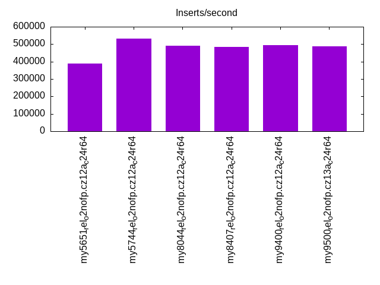
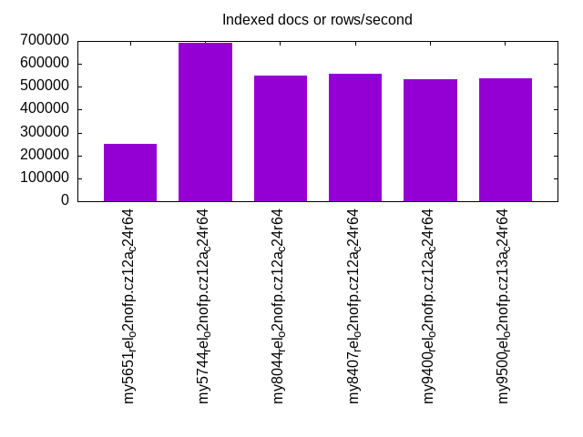
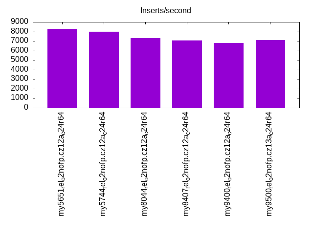
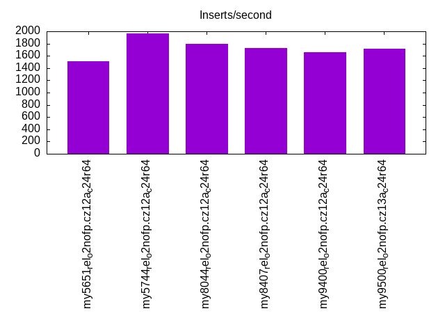
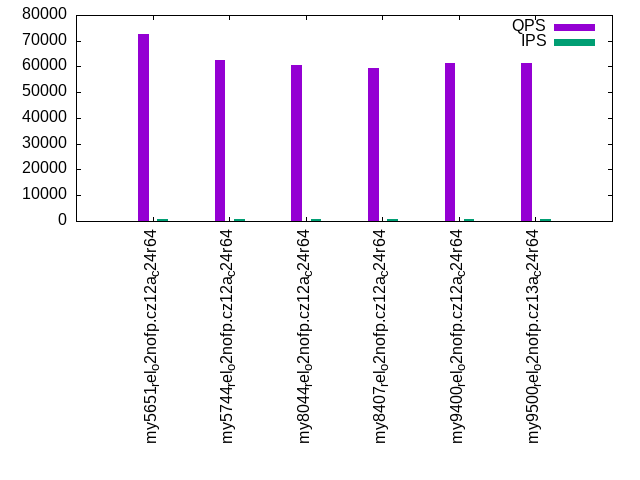
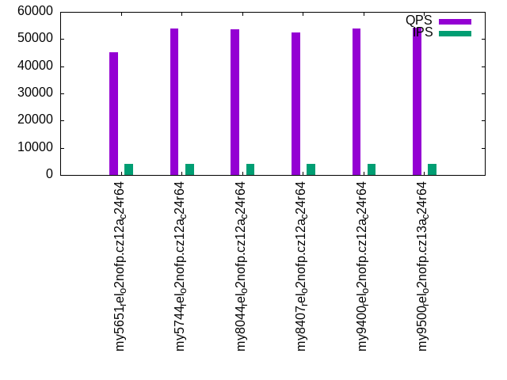
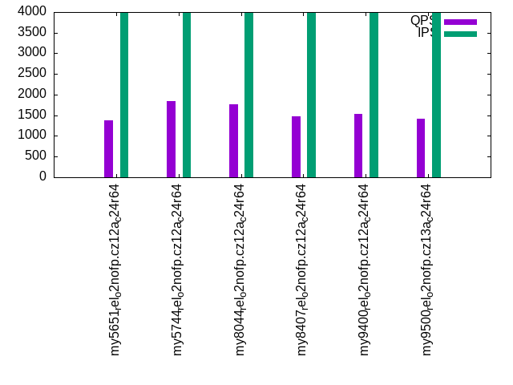
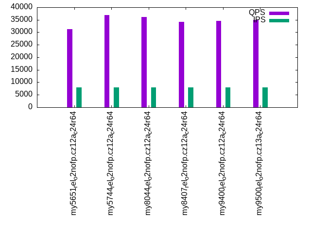
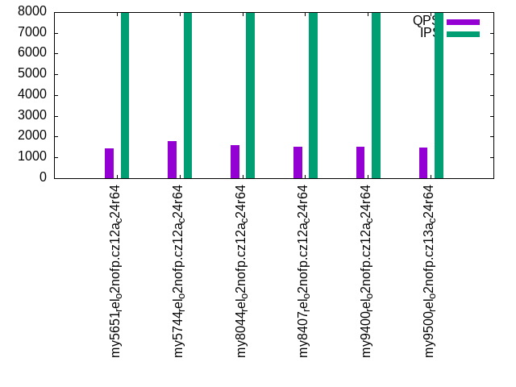

Introduction
This is a report for the insert benchmark with 2000M docs and 8 client(s). It is generated by scripts (bash, awk, sed) and Tufte might not be impressed. An overview of the insert benchmark is here and a short update is here. Below, by DBMS, I mean DBMS+version.config. An example is my8020.c10b40 where my means MySQL, 8020 is version 8.0.20 and c10b40 is the name for the configuration file.
The test server has 24 cores, 2 sockets, 64G RAM and 1 NVMe devices. The benchmark was run with 8 clients and there were 1 or 3 connections per client (1 for queries or inserts without rate limits, 1+1 for rate limited inserts+deletes). It uses 8 tables with a table per client. It loads 250M rows per table without secondary indexes, creates 3 secondary indexes per table, then inserts 4m+1m rows per table with a delete per insert to avoid growing the table. It then does 6 read+write tests for 1800s each that do queries as fast as possible with 100,100,500,500,1000,1000 inserts/s and the same for deletes/s per client concurrent with the queries. The database is larger than RAM and most tests are IO-bound except for the range query (qr*) tests that frequently have a cached working set. Clients and the DBMS share one server.
The tested DBMS are:
- my5651_rel_o2nofp.cz12a_c24r64 - MySQL 5.6.51 with the cz12a_c24r64 config
- my5744_rel_o2nofp.cz12a_c24r64 - MySQL 5.7.44 with the cz12a_c24r64 config
- my8044_rel_o2nofp.cz12a_c24r64 - MySQL 8.0.44 with the cz12a_c24r64 config
- my8407_rel_o2nofp.cz12a_c24r64 - MySQL 8.4.7 with the cz12a_c24r64 config
- my9400_rel_o2nofp.cz12a_c24r64 - MySQL 9.4.0 with the cz12a_c24r64 config
- my9500_rel_o2nofp.cz13a_c24r64 - MySQL 9.5.0 with the cz13a_c24r64 config
Contents
- Summary
- l.i0: load without secondary indexes
- l.x: create secondary indexes
- l.i1: continue load after secondary indexes created with 50 inserts per transaction
- l.i2: continue load after secondary indexes created with 5 inserts per transaction
- qr100.L1: range queries with 100 insert/s per client
- qp100.L2: point queries with 100 insert/s per client
- qr500.L3: range queries with 500 insert/s per client
- qp500.L4: point queries with 500 insert/s per client
- qr1000.L5: range queries with 1000 insert/s per client
- qp1000.L6: point queries with 1000 insert/s per client
Summary
The numbers are inserts/s for l.i0, l.i1 and l.i2, indexed docs (or rows) /s for l.x and queries/s for qr100, qp100 thru qr1000, qp1000" The values are the average rate over the entire test for inserts (IPS) and queries (QPS). The range of values for IPS and QPS is split into 3 parts: bottom 25%, middle 50%, top 25%. Values in the bottom 25% have a red background, values in the top 25% have a green background and values in the middle have no color. A gray background is used for values that can be ignored because the DBMS did not sustain the target insert rate. Red backgrounds are not used when the minimum value is within 80% of the max value.
| dbms | l.i0 | l.x | l.i1 | l.i2 | qr100 | qp100 | qr500 | qp500 | qr1000 | qp1000 |
|---|---|---|---|---|---|---|---|---|---|---|
| my5651_rel_o2nofp.cz12a_c24r64 | 387973 | 252270 | 8290 | 1511 | 72637 | 3035 | 45152 | 1374 | 31320 | 1448 |
| my5744_rel_o2nofp.cz12a_c24r64 | 533049 | 692521 | 8002 | 1964 | 62687 | 5759 | 53981 | 1836 | 36906 | 1793 |
| my8044_rel_o2nofp.cz12a_c24r64 | 491521 | 549904 | 7319 | 1800 | 60578 | 5680 | 53495 | 1764 | 36124 | 1584 |
| my8407_rel_o2nofp.cz12a_c24r64 | 485084 | 557880 | 7039 | 1732 | 59437 | 5434 | 52443 | 1484 | 34162 | 1519 |
| my9400_rel_o2nofp.cz12a_c24r64 | 493705 | 534474 | 6801 | 1664 | 61258 | 5322 | 53801 | 1537 | 34519 | 1524 |
| my9500_rel_o2nofp.cz13a_c24r64 | 488281 | 535332 | 7094 | 1720 | 61431 | 5479 | 54100 | 1424 | 34947 | 1494 |
This table has relative throughput, throughput for the DBMS relative to the DBMS in the first line, using the absolute throughput from the previous table. Values less than 0.95 have a yellow background. Values greater than 1.05 have a blue background.
| dbms | l.i0 | l.x | l.i1 | l.i2 | qr100 | qp100 | qr500 | qp500 | qr1000 | qp1000 |
|---|---|---|---|---|---|---|---|---|---|---|
| my5651_rel_o2nofp.cz12a_c24r64 | 1.00 | 1.00 | 1.00 | 1.00 | 1.00 | 1.00 | 1.00 | 1.00 | 1.00 | 1.00 |
| my5744_rel_o2nofp.cz12a_c24r64 | 1.37 | 2.75 | 0.97 | 1.30 | 0.86 | 1.90 | 1.20 | 1.34 | 1.18 | 1.24 |
| my8044_rel_o2nofp.cz12a_c24r64 | 1.27 | 2.18 | 0.88 | 1.19 | 0.83 | 1.87 | 1.18 | 1.28 | 1.15 | 1.09 |
| my8407_rel_o2nofp.cz12a_c24r64 | 1.25 | 2.21 | 0.85 | 1.15 | 0.82 | 1.79 | 1.16 | 1.08 | 1.09 | 1.05 |
| my9400_rel_o2nofp.cz12a_c24r64 | 1.27 | 2.12 | 0.82 | 1.10 | 0.84 | 1.75 | 1.19 | 1.12 | 1.10 | 1.05 |
| my9500_rel_o2nofp.cz13a_c24r64 | 1.26 | 2.12 | 0.86 | 1.14 | 0.85 | 1.81 | 1.20 | 1.04 | 1.12 | 1.03 |
This lists the average rate of inserts/s for the tests that do inserts concurrent with queries. For such tests the query rate is listed in the table above. The read+write tests are setup so that the insert rate should match the target rate every second. Cells that are not at least 95% of the target have a red background to indicate a failure to satisfy the target.
| dbms | qr100.L1 | qp100.L2 | qr500.L3 | qp500.L4 | qr1000.L5 | qp1000.L6 |
|---|---|---|---|---|---|---|
| my5651_rel_o2nofp.cz12a_c24r64 | 796 | 797 | 3982 | 3982 | 7947 | 7943 |
| my5744_rel_o2nofp.cz12a_c24r64 | 796 | 797 | 3984 | 3982 | 7947 | 7956 |
| my8044_rel_o2nofp.cz12a_c24r64 | 796 | 796 | 3984 | 3984 | 7965 | 7956 |
| my8407_rel_o2nofp.cz12a_c24r64 | 796 | 797 | 3984 | 3984 | 7960 | 7951 |
| my9400_rel_o2nofp.cz12a_c24r64 | 797 | 797 | 3982 | 3982 | 7965 | 7960 |
| my9500_rel_o2nofp.cz13a_c24r64 | 796 | 796 | 3984 | 3984 | 7960 | 7947 |
| target | 800 | 800 | 4000 | 4000 | 8000 | 8000 |
l.i0
l.i0: load without secondary indexes. Graphs for performance per 1-second interval are here.
Average throughput:
Insert response time histogram: each cell has the percentage of responses that take <= the time in the header and max is the max response time in seconds. For the max column values in the top 25% of the range have a red background and in the bottom 25% of the range have a green background. The red background is not used when the min value is within 80% of the max value.
| dbms | 256us | 1ms | 4ms | 16ms | 64ms | 256ms | 1s | 4s | 16s | gt | max |
|---|---|---|---|---|---|---|---|---|---|---|---|
| my5651_rel_o2nofp.cz12a_c24r64 | 0.428 | 98.941 | 0.359 | 0.254 | 0.017 | 0.001 | 0.564 | ||||
| my5744_rel_o2nofp.cz12a_c24r64 | 0.202 | 99.674 | 0.094 | 0.015 | 0.015 | nonzero | 0.265 | ||||
| my8044_rel_o2nofp.cz12a_c24r64 | 99.678 | 0.237 | 0.066 | 0.017 | 0.002 | 0.283 | |||||
| my8407_rel_o2nofp.cz12a_c24r64 | 99.700 | 0.222 | 0.063 | 0.014 | 0.002 | 0.281 | |||||
| my9400_rel_o2nofp.cz12a_c24r64 | 99.787 | 0.163 | 0.025 | 0.023 | 0.002 | 0.279 | |||||
| my9500_rel_o2nofp.cz13a_c24r64 | 99.777 | 0.170 | 0.028 | 0.023 | 0.002 | 0.292 |
Performance metrics for the DBMS listed above. Some are normalized by throughput, others are not. Legend for results is here.
ips qps rps rmbps wps wmbps rpq rkbpq wpi wkbpi csps cpups cspq cpupq dbgb1 dbgb2 rss maxop p50 p99 tag 387973 0 2725 10.6 2533.7 138.7 0.007 0.028 0.007 0.366 86016 36.7 0.222 23 131.6 182.1 47.1 0.564 48391 34195 my5651_rel_o2nofp.cz12a_c24r64 533049 0 1 0.0 3510.7 191.3 0.000 0.000 0.007 0.367 68691 44.6 0.129 20 131.6 182.1 48.8 0.265 68088 51993 my5744_rel_o2nofp.cz12a_c24r64 491521 0 1 0.0 3304.6 183.6 0.000 0.000 0.007 0.383 96996 47.4 0.197 23 131.1 181.7 47.8 0.283 63592 43694 my8044_rel_o2nofp.cz12a_c24r64 485084 0 1 0.0 3262.7 181.3 0.000 0.000 0.007 0.383 94996 46.9 0.196 23 131.1 274.6 48.7 0.281 63292 42795 my8407_rel_o2nofp.cz12a_c24r64 493705 0 1 0.0 3313.1 184.3 0.000 0.000 0.007 0.382 67507 43.1 0.137 21 131.1 274.6 49.1 0.279 63392 46794 my9400_rel_o2nofp.cz12a_c24r64 488281 0 1 0.0 3280.8 182.4 0.000 0.000 0.007 0.382 67401 42.5 0.138 21 131.1 274.6 49.2 0.292 62992 46394 my9500_rel_o2nofp.cz13a_c24r64
Average values from iostat.
r/s rkB/s rrqm/s %rrqm r_await rareq-s w/s wkB/s wrqm/s %wrqm w_await wareq-s d/s dkB/s drqm/s %drqm d_await dareq-s f/s f_await aqu-sz %util 2724.6 10903.0 0.002 0.000 0.300 3.800 2533.7 142003 24.30 0.972 3.484 56.70 0.228 1.420 0.000 0.000 0.095 2.196 0.000 0.000 9.196 25.58 my5651_rel_o2nofp.cz12a_c24r64 0.895 9.212 0.000 0.000 3.439 5.236 3510.7 195846 67.93 2.003 3.830 56.42 0.444 3.094 0.000 0.000 0.141 3.141 0.000 0.000 13.50 11.63 my5744_rel_o2nofp.cz12a_c24r64 0.948 10.04 0.004 0.080 2.764 5.431 3304.6 188019 60.01 1.893 7.984 57.39 0.376 2.431 0.000 0.000 0.134 2.879 0.000 0.000 26.82 12.34 my8044_rel_o2nofp.cz12a_c24r64 0.947 9.890 0.000 0.000 3.024 5.618 3262.7 185629 59.39 1.903 8.165 57.33 0.404 3.106 0.000 0.000 0.134 3.333 0.000 0.000 27.02 12.19 my8407_rel_o2nofp.cz12a_c24r64 1.045 10.28 0.004 0.077 3.017 5.222 3313.1 188706 59.97 1.889 7.914 57.44 0.419 3.616 0.000 0.000 0.133 3.763 0.000 0.000 26.54 12.32 my9400_rel_o2nofp.cz12a_c24r64 1.014 10.17 0.005 0.006 3.090 5.150 3280.8 186740 59.42 1.889 7.902 57.39 0.404 3.139 0.000 0.000 0.131 3.229 0.000 0.000 26.24 12.19 my9500_rel_o2nofp.cz13a_c24r64
l.x
l.x: create secondary indexes.
Average throughput:
Performance metrics for the DBMS listed above. Some are normalized by throughput, others are not. Legend for results is here.
ips qps rps rmbps wps wmbps rpq rkbpq wpi wkbpi csps cpups cspq cpupq dbgb1 dbgb2 rss maxop p50 p99 tag 252270 0 3768 232.7 16489.0 581.1 0.015 0.945 0.065 2.359 59059 25.3 0.234 24 278.6 329.1 47.3 0.002 NA NA my5651_rel_o2nofp.cz12a_c24r64 692521 0 7086 629.3 10652.5 769.6 0.010 0.930 0.015 1.138 45093 23.5 0.065 8 302.9 353.4 49.2 0.033 NA NA my5744_rel_o2nofp.cz12a_c24r64 549904 0 7503 722.4 16941.0 804.9 0.014 1.345 0.031 1.499 46901 38.8 0.085 17 301.8 352.4 48.1 0.008 NA NA my8044_rel_o2nofp.cz12a_c24r64 557880 0 7597 732.8 17195.2 816.4 0.014 1.345 0.031 1.499 47035 38.4 0.084 17 301.8 445.2 47.7 0.003 NA NA my8407_rel_o2nofp.cz12a_c24r64 534474 0 7254 694.1 16471.8 782.5 0.014 1.330 0.031 1.499 44958 36.5 0.084 16 301.8 445.2 49.3 0.002 NA NA my9400_rel_o2nofp.cz12a_c24r64 535332 0 7276 701.6 16512.8 783.7 0.014 1.342 0.031 1.499 45500 36.6 0.085 16 301.8 445.2 49.5 0.006 NA NA my9500_rel_o2nofp.cz13a_c24r64
Average values from iostat.
r/s rkB/s rrqm/s %rrqm r_await rareq-s w/s wkB/s wrqm/s %wrqm w_await wareq-s d/s dkB/s drqm/s %drqm d_await dareq-s f/s f_await aqu-sz %util 3767.5 238276 0.002 0.000 0.223 42.00 16489.0 595033 2303.2 9.659 5.431 54.95 1.663 18887.0 0.000 0.000 0.011 153.2 0.000 0.000 41.69 70.29 my5651_rel_o2nofp.cz12a_c24r64 7086.1 644371 0.000 0.000 0.379 92.34 10652.5 788115 105.7 0.753 15.22 110.5 4.269 44063.9 0.000 0.000 0.020 323.6 0.000 0.000 118.6 82.68 my5744_rel_o2nofp.cz12a_c24r64 7503.4 739735 0.000 0.000 1.038 115.6 16941.0 824220 110.3 0.707 17.26 72.30 10.91 89009.9 0.000 0.000 0.073 932.0 0.000 0.000 195.5 98.51 my8044_rel_o2nofp.cz12a_c24r64 7597.0 750373 0.000 0.000 1.025 115.6 17195.2 835992 111.4 0.690 17.18 73.27 11.04 90250.6 0.000 0.000 0.095 920.8 0.000 0.000 194.5 98.55 my8407_rel_o2nofp.cz12a_c24r64 7254.4 710743 0.029 0.000 1.096 114.7 16471.8 801281 92.46 0.616 17.60 73.12 10.89 86510.0 0.000 0.000 0.076 854.1 0.000 0.000 192.8 97.51 my9400_rel_o2nofp.cz12a_c24r64 7276.0 718450 0.000 0.000 1.130 116.7 16512.8 802559 100.0 0.633 17.92 72.56 10.54 86624.3 0.000 0.000 0.091 966.2 0.000 0.000 196.3 98.55 my9500_rel_o2nofp.cz13a_c24r64
l.i1
l.i1: continue load after secondary indexes created with 50 inserts per transaction. Graphs for performance per 1-second interval are here.
Average throughput:
Insert response time histogram: each cell has the percentage of responses that take <= the time in the header and max is the max response time in seconds. For the max column values in the top 25% of the range have a red background and in the bottom 25% of the range have a green background. The red background is not used when the min value is within 80% of the max value.
| dbms | 256us | 1ms | 4ms | 16ms | 64ms | 256ms | 1s | 4s | 16s | gt | max |
|---|---|---|---|---|---|---|---|---|---|---|---|
| my5651_rel_o2nofp.cz12a_c24r64 | 0.033 | 21.880 | 54.256 | 23.705 | 0.115 | 0.011 | nonzero | 4.342 | |||
| my5744_rel_o2nofp.cz12a_c24r64 | 0.036 | 21.402 | 53.664 | 23.704 | 1.193 | 0.449 | |||||
| my8044_rel_o2nofp.cz12a_c24r64 | 0.001 | 24.336 | 46.348 | 28.819 | 0.496 | 0.891 | |||||
| my8407_rel_o2nofp.cz12a_c24r64 | 0.008 | 25.345 | 43.386 | 30.698 | 0.563 | 0.787 | |||||
| my9400_rel_o2nofp.cz12a_c24r64 | 0.002 | 26.251 | 40.460 | 32.712 | 0.575 | 0.870 | |||||
| my9500_rel_o2nofp.cz13a_c24r64 | 0.002 | 24.713 | 43.778 | 31.026 | 0.481 | 0.984 |
Delete response time histogram: each cell has the percentage of responses that take <= the time in the header and max is the max response time in seconds. For the max column values in the top 25% of the range have a red background and in the bottom 25% of the range have a green background. The red background is not used when the min value is within 80% of the max value.
| dbms | 256us | 1ms | 4ms | 16ms | 64ms | 256ms | 1s | 4s | 16s | gt | max |
|---|---|---|---|---|---|---|---|---|---|---|---|
| my5651_rel_o2nofp.cz12a_c24r64 | 3.597 | 49.904 | 45.657 | 0.839 | 0.003 | 0.001 | 3.189 | ||||
| my5744_rel_o2nofp.cz12a_c24r64 | 27.928 | 64.197 | 7.627 | 0.247 | 0.001 | 0.274 | |||||
| my8044_rel_o2nofp.cz12a_c24r64 | 28.105 | 56.809 | 13.112 | 1.907 | 0.067 | 0.813 | |||||
| my8407_rel_o2nofp.cz12a_c24r64 | 27.798 | 57.065 | 13.238 | 1.830 | 0.070 | 0.755 | |||||
| my9400_rel_o2nofp.cz12a_c24r64 | 27.199 | 57.992 | 12.852 | 1.899 | 0.057 | 0.790 | |||||
| my9500_rel_o2nofp.cz13a_c24r64 | 27.135 | 57.717 | 13.259 | 1.822 | 0.067 | 0.844 |
Performance metrics for the DBMS listed above. Some are normalized by throughput, others are not. Legend for results is here.
ips qps rps rmbps wps wmbps rpq rkbpq wpi wkbpi csps cpups cspq cpupq dbgb1 dbgb2 rss maxop p50 p99 tag 8290 0 15277 235.4 26862.1 676.8 1.843 29.082 3.240 83.604 123244 19.4 14.866 562 411.6 473.2 47.3 4.342 750 300 my5651_rel_o2nofp.cz12a_c24r64 8002 0 16599 259.4 26597.2 706.5 2.074 33.190 3.324 90.403 132655 19.8 16.578 594 409.1 468.9 49.0 0.449 750 300 my5744_rel_o2nofp.cz12a_c24r64 7319 0 15874 248.0 23010.5 685.5 2.169 34.700 3.144 95.899 143609 20.5 19.621 672 405.5 464.3 48.7 0.891 850 250 my8044_rel_o2nofp.cz12a_c24r64 7039 0 15240 238.1 22142.1 659.1 2.165 34.641 3.146 95.886 138214 20.1 19.635 685 405.8 560.7 48.5 0.787 800 250 my8407_rel_o2nofp.cz12a_c24r64 6801 0 14899 232.8 21660.5 644.7 2.191 35.049 3.185 97.071 122792 19.6 18.054 692 405.4 559.9 47.9 0.870 800 250 my9400_rel_o2nofp.cz12a_c24r64 7094 0 15508 242.3 22391.5 666.9 2.186 34.978 3.157 96.274 127829 19.7 18.020 667 405.3 560.0 49.4 0.984 850 300 my9500_rel_o2nofp.cz13a_c24r64
Average values from iostat.
r/s rkB/s rrqm/s %rrqm r_await rareq-s w/s wkB/s wrqm/s %wrqm w_await wareq-s d/s dkB/s drqm/s %drqm d_await dareq-s f/s f_await aqu-sz %util 15276.8 241089 0.000 0.000 0.251 15.77 26862.1 693081 67.16 0.267 0.718 26.65 0.015 0.238 0.000 0.000 0.016 1.028 0.000 0.000 22.03 97.79 my5651_rel_o2nofp.cz12a_c24r64 16599.0 265582 0.000 0.000 0.364 16.00 26597.2 723408 73.41 0.299 1.232 27.42 0.013 0.092 0.000 0.000 0.013 0.385 0.000 0.000 38.51 99.74 my5744_rel_o2nofp.cz12a_c24r64 15874.0 253981 0.000 0.000 0.957 16.00 23010.5 701915 43.17 0.220 15.12 30.79 0.015 2.416 0.000 0.000 0.053 9.778 0.000 0.000 363.4 99.55 my8044_rel_o2nofp.cz12a_c24r64 15240.2 243841 0.000 0.000 1.024 16.00 22142.1 674952 51.51 0.270 15.44 30.79 0.013 0.602 0.000 0.000 0.017 2.099 0.000 0.000 358.1 99.50 my8407_rel_o2nofp.cz12a_c24r64 14898.6 238375 0.005 0.000 1.029 16.00 21660.5 660197 44.02 0.236 15.87 30.76 0.013 0.101 0.000 0.000 0.013 0.307 0.000 0.000 359.7 99.50 my9400_rel_o2nofp.cz12a_c24r64 15507.8 248121 0.000 0.000 0.980 16.00 22391.5 682937 46.09 0.243 15.42 30.81 0.014 0.093 0.000 0.000 0.016 0.293 0.000 0.000 360.8 99.54 my9500_rel_o2nofp.cz13a_c24r64
l.i2
l.i2: continue load after secondary indexes created with 5 inserts per transaction. Graphs for performance per 1-second interval are here.
Average throughput:
Insert response time histogram: each cell has the percentage of responses that take <= the time in the header and max is the max response time in seconds. For the max column values in the top 25% of the range have a red background and in the bottom 25% of the range have a green background. The red background is not used when the min value is within 80% of the max value.
| dbms | 256us | 1ms | 4ms | 16ms | 64ms | 256ms | 1s | 4s | 16s | gt | max |
|---|---|---|---|---|---|---|---|---|---|---|---|
| my5651_rel_o2nofp.cz12a_c24r64 | nonzero | 1.601 | 15.205 | 26.668 | 55.375 | 1.150 | 0.200 | ||||
| my5744_rel_o2nofp.cz12a_c24r64 | 7.105 | 20.898 | 24.384 | 47.326 | 0.287 | 0.199 | |||||
| my8044_rel_o2nofp.cz12a_c24r64 | 3.281 | 7.861 | 39.070 | 46.986 | 2.802 | 0.001 | 0.375 | ||||
| my8407_rel_o2nofp.cz12a_c24r64 | 3.421 | 7.497 | 37.050 | 49.074 | 2.957 | 0.001 | 0.730 | ||||
| my9400_rel_o2nofp.cz12a_c24r64 | 3.186 | 7.261 | 35.491 | 50.555 | 3.506 | 0.001 | 0.451 | ||||
| my9500_rel_o2nofp.cz13a_c24r64 | 3.044 | 6.959 | 37.705 | 49.224 | 3.067 | 0.001 | 0.583 |
Delete response time histogram: each cell has the percentage of responses that take <= the time in the header and max is the max response time in seconds. For the max column values in the top 25% of the range have a red background and in the bottom 25% of the range have a green background. The red background is not used when the min value is within 80% of the max value.
| dbms | 256us | 1ms | 4ms | 16ms | 64ms | 256ms | 1s | 4s | 16s | gt | max |
|---|---|---|---|---|---|---|---|---|---|---|---|
| my5651_rel_o2nofp.cz12a_c24r64 | 0.002 | 10.517 | 26.871 | 8.823 | 53.652 | 0.134 | 0.151 | ||||
| my5744_rel_o2nofp.cz12a_c24r64 | 42.989 | 11.270 | 1.136 | 44.523 | 0.083 | 0.199 | |||||
| my8044_rel_o2nofp.cz12a_c24r64 | 3.417 | 15.561 | 37.569 | 41.862 | 1.590 | 0.001 | 0.375 | ||||
| my8407_rel_o2nofp.cz12a_c24r64 | 3.674 | 14.657 | 36.820 | 43.285 | 1.564 | 0.001 | 0.735 | ||||
| my9400_rel_o2nofp.cz12a_c24r64 | 3.766 | 14.499 | 35.915 | 44.086 | 1.734 | 0.001 | 0.449 | ||||
| my9500_rel_o2nofp.cz13a_c24r64 | 3.492 | 13.966 | 37.448 | 43.483 | 1.609 | 0.001 | 0.492 |
Performance metrics for the DBMS listed above. Some are normalized by throughput, others are not. Legend for results is here.
ips qps rps rmbps wps wmbps rpq rkbpq wpi wkbpi csps cpups cspq cpupq dbgb1 dbgb2 rss maxop p50 p99 tag 1511 0 15573 238.4 23779.5 567.3 10.306 161.576 15.737 384.421 110180 12.4 72.914 1969 411.6 473.4 47.3 0.200 115 80 my5651_rel_o2nofp.cz12a_c24r64 1964 0 18162 283.8 24936.2 670.8 9.247 147.949 12.696 349.724 129133 16.3 65.747 1992 409.2 469.1 49.0 0.199 135 95 my5744_rel_o2nofp.cz12a_c24r64 1800 0 16709 261.1 21683.4 613.8 9.284 148.546 12.048 349.248 147372 16.1 81.887 2147 405.6 464.6 48.7 0.375 140 90 my8044_rel_o2nofp.cz12a_c24r64 1732 0 16043 250.7 20832.9 589.2 9.265 148.241 12.031 348.455 141637 15.8 81.796 2190 405.8 562.5 48.5 0.730 135 85 my8407_rel_o2nofp.cz12a_c24r64 1664 0 15448 241.4 20038.4 566.8 9.287 148.588 12.046 348.922 122609 14.5 73.705 2092 405.4 561.7 47.9 0.451 135 80 my9400_rel_o2nofp.cz12a_c24r64 1720 0 15904 248.5 20627.8 583.7 9.244 147.911 11.990 347.453 126618 14.6 73.598 2037 405.4 561.8 49.4 0.583 135 85 my9500_rel_o2nofp.cz13a_c24r64
Average values from iostat.
r/s rkB/s rrqm/s %rrqm r_await rareq-s w/s wkB/s wrqm/s %wrqm w_await wareq-s d/s dkB/s drqm/s %drqm d_await dareq-s f/s f_await aqu-sz %util 15573.4 244157 0.000 0.000 0.220 15.69 23779.5 580898 29.05 0.122 0.559 24.47 0.009 0.052 0.000 0.000 0.011 0.242 0.000 0.000 16.73 98.14 my5651_rel_o2nofp.cz12a_c24r64 18161.7 290587 0.000 0.000 0.323 16.00 24936.2 686892 27.41 0.110 0.870 27.59 0.004 0.038 0.000 0.000 0.004 0.167 0.000 0.000 27.63 99.72 my5744_rel_o2nofp.cz12a_c24r64 16708.7 267339 0.000 0.000 0.709 16.00 21683.4 628542 1.691 0.009 14.99 28.99 0.006 0.039 0.000 0.000 0.029 0.166 0.000 0.000 336.8 99.29 my8044_rel_o2nofp.cz12a_c24r64 16043.4 256695 0.000 0.000 0.745 16.00 20832.9 603384 6.000 0.029 15.21 28.96 0.021 0.119 0.000 0.000 0.076 0.501 0.000 0.000 328.8 99.09 my8407_rel_o2nofp.cz12a_c24r64 15448.5 247175 0.000 0.000 0.800 16.00 20038.4 580432 2.019 0.011 16.06 28.97 0.019 0.153 0.000 0.000 0.045 0.666 0.000 0.000 334.1 99.29 my9400_rel_o2nofp.cz12a_c24r64 15904.1 254466 0.000 0.000 0.748 16.00 20627.8 597757 1.946 0.011 15.44 28.98 0.020 13.10 0.000 0.000 0.068 62.70 0.000 0.000 330.4 99.18 my9500_rel_o2nofp.cz13a_c24r64
qr100.L1
qr100.L1: range queries with 100 insert/s per client. Graphs for performance per 1-second interval are here.
Average throughput:
Query response time histogram: each cell has the percentage of responses that take <= the time in the header and max is the max response time in seconds. For max values in the top 25% of the range have a red background and in the bottom 25% of the range have a green background. The red background is not used when the min value is within 80% of the max value.
| dbms | 256us | 1ms | 4ms | 16ms | 64ms | 256ms | 1s | 4s | 16s | gt | max |
|---|---|---|---|---|---|---|---|---|---|---|---|
| my5651_rel_o2nofp.cz12a_c24r64 | 99.425 | 0.451 | 0.118 | 0.007 | nonzero | 0.017 | |||||
| my5744_rel_o2nofp.cz12a_c24r64 | 99.830 | 0.122 | 0.047 | nonzero | nonzero | 0.017 | |||||
| my8044_rel_o2nofp.cz12a_c24r64 | 99.879 | 0.120 | 0.001 | nonzero | nonzero | nonzero | 0.065 | ||||
| my8407_rel_o2nofp.cz12a_c24r64 | 99.871 | 0.126 | 0.002 | nonzero | nonzero | 0.062 | |||||
| my9400_rel_o2nofp.cz12a_c24r64 | 99.895 | 0.104 | 0.001 | nonzero | nonzero | 0.054 | |||||
| my9500_rel_o2nofp.cz13a_c24r64 | 99.889 | 0.109 | 0.001 | nonzero | nonzero | 0.058 |
Insert response time histogram: each cell has the percentage of responses that take <= the time in the header and max is the max response time in seconds. For max values in the top 25% of the range have a red background and in the bottom 25% of the range have a green background. The red background is not used when the min value is within 80% of the max value.
| dbms | 256us | 1ms | 4ms | 16ms | 64ms | 256ms | 1s | 4s | 16s | gt | max |
|---|---|---|---|---|---|---|---|---|---|---|---|
| my5651_rel_o2nofp.cz12a_c24r64 | 13.365 | 86.622 | 0.014 | 0.069 | |||||||
| my5744_rel_o2nofp.cz12a_c24r64 | 94.417 | 5.583 | 0.034 | ||||||||
| my8044_rel_o2nofp.cz12a_c24r64 | 68.604 | 31.396 | 0.041 | ||||||||
| my8407_rel_o2nofp.cz12a_c24r64 | 52.226 | 41.094 | 6.681 | 0.181 | |||||||
| my9400_rel_o2nofp.cz12a_c24r64 | 77.309 | 22.608 | 0.083 | 0.119 | |||||||
| my9500_rel_o2nofp.cz13a_c24r64 | 60.750 | 39.111 | 0.139 | 0.113 |
Delete response time histogram: each cell has the percentage of responses that take <= the time in the header and max is the max response time in seconds. For max values in the top 25% of the range have a red background and in the bottom 25% of the range have a green background. The red background is not used when the min value is within 80% of the max value.
| dbms | 256us | 1ms | 4ms | 16ms | 64ms | 256ms | 1s | 4s | 16s | gt | max |
|---|---|---|---|---|---|---|---|---|---|---|---|
| my5651_rel_o2nofp.cz12a_c24r64 | 23.969 | 69.507 | 6.524 | 0.036 | |||||||
| my5744_rel_o2nofp.cz12a_c24r64 | 75.281 | 24.719 | 0.008 | ||||||||
| my8044_rel_o2nofp.cz12a_c24r64 | 64.938 | 35.062 | 0.014 | ||||||||
| my8407_rel_o2nofp.cz12a_c24r64 | 94.802 | 2.163 | 2.882 | 0.153 | 0.130 | ||||||
| my9400_rel_o2nofp.cz12a_c24r64 | 86.965 | 12.986 | 0.049 | 0.106 | |||||||
| my9500_rel_o2nofp.cz13a_c24r64 | 76.365 | 23.514 | 0.122 | 0.106 |
Performance metrics for the DBMS listed above. Some are normalized by throughput, others are not. Legend for results is here.
ips qps rps rmbps wps wmbps rpq rkbpq wpi wkbpi csps cpups cspq cpupq dbgb1 dbgb2 rss maxop p50 p99 tag 796 72637 4134 64.3 3958.3 112.6 0.057 0.906 4.970 144.718 436517 34.1 6.010 113 411.6 473.4 47.3 0.017 9198 6991 my5651_rel_o2nofp.cz12a_c24r64 796 62687 4087 63.9 4092.3 116.5 0.065 1.043 5.138 149.768 375231 35.8 5.986 137 409.2 469.1 49.0 0.017 7951 5519 my5744_rel_o2nofp.cz12a_c24r64 796 60578 3749 58.6 4144.5 118.0 0.062 0.990 5.204 151.760 367895 36.5 6.073 145 405.6 464.6 48.7 0.065 7615 7359 my8044_rel_o2nofp.cz12a_c24r64 796 59437 3758 58.7 4117.7 117.2 0.063 1.012 5.170 150.758 362638 36.2 6.101 146 405.8 562.6 48.5 0.062 7503 6831 my8407_rel_o2nofp.cz12a_c24r64 797 61258 3756 58.7 4127.0 117.6 0.061 0.981 5.179 151.056 370665 36.2 6.051 142 405.4 561.8 47.9 0.054 7727 7151 my9400_rel_o2nofp.cz12a_c24r64 796 61431 3756 58.7 4113.9 117.2 0.061 0.978 5.166 150.731 373140 36.5 6.074 143 405.4 562.0 49.4 0.058 7791 7311 my9500_rel_o2nofp.cz13a_c24r64
Average values from iostat.
r/s rkB/s rrqm/s %rrqm r_await rareq-s w/s wkB/s wrqm/s %wrqm w_await wareq-s d/s dkB/s drqm/s %drqm d_await dareq-s f/s f_await aqu-sz %util 4134.1 65800.3 0.000 0.000 0.197 15.91 3958.3 115253 7.417 0.314 0.482 29.59 0.002 0.100 0.000 0.000 0.003 0.499 0.000 0.000 2.792 20.26 my5651_rel_o2nofp.cz12a_c24r64 4086.8 65388.4 0.000 0.000 0.145 16.00 4092.3 119275 7.206 0.189 0.352 29.23 0.002 0.009 0.000 0.000 0.006 0.044 0.000 0.000 2.058 18.98 my5744_rel_o2nofp.cz12a_c24r64 3749.4 59989.8 0.000 0.000 0.230 16.00 4144.5 120862 1.046 0.029 9.597 29.27 0.004 0.018 0.000 0.000 0.008 0.089 0.000 0.000 42.50 20.44 my8044_rel_o2nofp.cz12a_c24r64 3758.2 60130.9 0.000 0.000 0.320 16.00 4117.7 120064 2.158 0.056 10.82 29.27 0.003 0.013 0.000 0.000 0.006 0.066 0.000 0.000 47.66 20.83 my8407_rel_o2nofp.cz12a_c24r64 3755.9 60094.1 0.000 0.000 0.169 16.00 4127.0 120377 1.432 0.039 9.767 29.27 0.005 0.040 0.000 0.000 0.072 0.199 0.000 0.000 43.19 21.75 my9400_rel_o2nofp.cz12a_c24r64 3755.9 60094.1 0.000 0.000 0.205 16.00 4113.9 120042 1.381 0.038 11.33 29.30 0.003 2.526 0.000 0.000 0.044 12.63 0.000 0.000 48.89 26.73 my9500_rel_o2nofp.cz13a_c24r64
qp100.L2
qp100.L2: point queries with 100 insert/s per client. Graphs for performance per 1-second interval are here.
Average throughput:

Query response time histogram: each cell has the percentage of responses that take <= the time in the header and max is the max response time in seconds. For max values in the top 25% of the range have a red background and in the bottom 25% of the range have a green background. The red background is not used when the min value is within 80% of the max value.
| dbms | 256us | 1ms | 4ms | 16ms | 64ms | 256ms | 1s | 4s | 16s | gt | max |
|---|---|---|---|---|---|---|---|---|---|---|---|
| my5651_rel_o2nofp.cz12a_c24r64 | nonzero | 7.425 | 77.020 | 15.539 | 0.016 | 0.036 | |||||
| my5744_rel_o2nofp.cz12a_c24r64 | 0.001 | 23.042 | 76.145 | 0.812 | nonzero | 0.021 | |||||
| my8044_rel_o2nofp.cz12a_c24r64 | 0.001 | 22.054 | 75.361 | 2.490 | 0.095 | nonzero | 0.081 | ||||
| my8407_rel_o2nofp.cz12a_c24r64 | 0.001 | 18.703 | 78.122 | 3.066 | 0.109 | nonzero | 0.104 | ||||
| my9400_rel_o2nofp.cz12a_c24r64 | 0.001 | 18.059 | 78.719 | 3.105 | 0.116 | 0.059 | |||||
| my9500_rel_o2nofp.cz13a_c24r64 | nonzero | 20.129 | 76.800 | 2.956 | 0.115 | 0.059 |
Insert response time histogram: each cell has the percentage of responses that take <= the time in the header and max is the max response time in seconds. For max values in the top 25% of the range have a red background and in the bottom 25% of the range have a green background. The red background is not used when the min value is within 80% of the max value.
| dbms | 256us | 1ms | 4ms | 16ms | 64ms | 256ms | 1s | 4s | 16s | gt | max |
|---|---|---|---|---|---|---|---|---|---|---|---|
| my5651_rel_o2nofp.cz12a_c24r64 | 0.007 | 9.965 | 89.830 | 0.198 | 0.309 | ||||||
| my5744_rel_o2nofp.cz12a_c24r64 | 28.156 | 71.240 | 0.604 | 0.137 | |||||||
| my8044_rel_o2nofp.cz12a_c24r64 | 47.069 | 51.215 | 1.715 | 0.160 | |||||||
| my8407_rel_o2nofp.cz12a_c24r64 | 33.465 | 63.556 | 2.979 | 0.134 | |||||||
| my9400_rel_o2nofp.cz12a_c24r64 | 29.903 | 67.934 | 2.163 | 0.177 | |||||||
| my9500_rel_o2nofp.cz13a_c24r64 | 26.340 | 69.090 | 4.569 | 0.164 |
Delete response time histogram: each cell has the percentage of responses that take <= the time in the header and max is the max response time in seconds. For max values in the top 25% of the range have a red background and in the bottom 25% of the range have a green background. The red background is not used when the min value is within 80% of the max value.
| dbms | 256us | 1ms | 4ms | 16ms | 64ms | 256ms | 1s | 4s | 16s | gt | max |
|---|---|---|---|---|---|---|---|---|---|---|---|
| my5651_rel_o2nofp.cz12a_c24r64 | 1.979 | 29.802 | 64.160 | 4.059 | 0.159 | ||||||
| my5744_rel_o2nofp.cz12a_c24r64 | 87.358 | 12.632 | 0.010 | 0.018 | |||||||
| my8044_rel_o2nofp.cz12a_c24r64 | 95.104 | 4.424 | 0.462 | 0.010 | 0.079 | ||||||
| my8407_rel_o2nofp.cz12a_c24r64 | 93.410 | 6.160 | 0.431 | 0.052 | |||||||
| my9400_rel_o2nofp.cz12a_c24r64 | 88.712 | 10.691 | 0.594 | 0.003 | 0.076 | ||||||
| my9500_rel_o2nofp.cz13a_c24r64 | 79.958 | 19.229 | 0.802 | 0.010 | 0.068 |
Performance metrics for the DBMS listed above. Some are normalized by throughput, others are not. Legend for results is here.
ips qps rps rmbps wps wmbps rpq rkbpq wpi wkbpi csps cpups cspq cpupq dbgb1 dbgb2 rss maxop p50 p99 tag 797 3035 27779 433.7 7194.7 194.4 9.153 146.330 9.028 249.775 122358 21.0 40.314 1661 411.6 473.4 47.3 0.036 384 240 my5651_rel_o2nofp.cz12a_c24r64 797 5759 46182 721.6 8528.3 205.4 8.019 128.304 10.702 263.937 154174 12.3 26.771 513 409.2 469.1 49.0 0.021 752 256 my5744_rel_o2nofp.cz12a_c24r64 796 5680 45659 713.4 7446.7 208.2 8.039 128.628 9.350 267.720 149701 12.4 26.358 524 405.6 464.6 48.6 0.081 752 288 my8044_rel_o2nofp.cz12a_c24r64 797 5434 43934 686.5 7440.4 208.0 8.085 129.353 9.337 267.254 145505 13.1 26.775 579 405.8 562.7 48.4 0.104 720 256 my8407_rel_o2nofp.cz12a_c24r64 797 5322 43227 675.4 7418.4 207.5 8.122 129.947 9.309 266.592 141062 13.1 26.504 591 405.4 562.0 47.8 0.059 704 272 my9400_rel_o2nofp.cz12a_c24r64 796 5479 44319 692.5 7414.4 207.5 8.089 129.416 9.310 266.760 144358 13.0 26.347 569 405.4 562.1 49.4 0.059 720 256 my9500_rel_o2nofp.cz13a_c24r64
Average values from iostat.
r/s rkB/s rrqm/s %rrqm r_await rareq-s w/s wkB/s wrqm/s %wrqm w_await wareq-s d/s dkB/s drqm/s %drqm d_await dareq-s f/s f_await aqu-sz %util 27778.8 444125 0.000 0.000 0.154 15.99 7194.7 199046 6.737 0.104 0.592 28.57 0.003 0.166 0.000 0.000 0.003 0.831 0.000 0.000 8.332 93.41 my5651_rel_o2nofp.cz12a_c24r64 46182.3 738916 0.000 0.000 0.144 16.00 8528.3 210331 6.915 0.087 0.494 25.05 0.002 0.007 0.000 0.000 0.003 0.033 0.000 0.000 10.68 99.97 my5744_rel_o2nofp.cz12a_c24r64 45659.0 730545 0.000 0.000 0.163 16.00 7446.7 213212 1.588 0.023 10.24 28.66 0.002 0.007 0.000 0.000 0.003 0.033 0.000 0.000 85.17 99.97 my8044_rel_o2nofp.cz12a_c24r64 43934.0 702943 0.000 0.000 0.175 16.00 7440.4 212975 1.941 0.028 10.92 28.65 0.008 0.038 0.000 0.000 0.011 0.151 0.000 0.000 90.46 99.96 my8407_rel_o2nofp.cz12a_c24r64 43226.9 691630 0.000 0.000 0.169 16.00 7418.4 212447 2.289 0.033 10.91 28.67 0.012 0.098 0.000 0.000 0.015 0.443 0.000 0.000 89.95 99.96 my9400_rel_o2nofp.cz12a_c24r64 44318.6 709097 0.000 0.000 0.168 16.00 7414.4 212448 1.943 0.028 10.75 28.68 0.008 5.483 0.000 0.000 0.012 25.98 0.000 0.000 89.33 99.97 my9500_rel_o2nofp.cz13a_c24r64
qr500.L3
qr500.L3: range queries with 500 insert/s per client. Graphs for performance per 1-second interval are here.
Average throughput:
Query response time histogram: each cell has the percentage of responses that take <= the time in the header and max is the max response time in seconds. For max values in the top 25% of the range have a red background and in the bottom 25% of the range have a green background. The red background is not used when the min value is within 80% of the max value.
| dbms | 256us | 1ms | 4ms | 16ms | 64ms | 256ms | 1s | 4s | 16s | gt | max |
|---|---|---|---|---|---|---|---|---|---|---|---|
| my5651_rel_o2nofp.cz12a_c24r64 | 94.755 | 3.440 | 1.554 | 0.240 | 0.011 | 0.058 | |||||
| my5744_rel_o2nofp.cz12a_c24r64 | 99.209 | 0.665 | 0.118 | 0.008 | 0.001 | 0.059 | |||||
| my8044_rel_o2nofp.cz12a_c24r64 | 99.351 | 0.623 | 0.018 | 0.006 | 0.003 | nonzero | 0.098 | ||||
| my8407_rel_o2nofp.cz12a_c24r64 | 99.257 | 0.711 | 0.023 | 0.005 | 0.004 | nonzero | 0.105 | ||||
| my9400_rel_o2nofp.cz12a_c24r64 | 99.378 | 0.593 | 0.021 | 0.006 | 0.003 | nonzero | 0.095 | ||||
| my9500_rel_o2nofp.cz13a_c24r64 | 99.343 | 0.625 | 0.022 | 0.005 | 0.004 | nonzero | 0.100 |
Insert response time histogram: each cell has the percentage of responses that take <= the time in the header and max is the max response time in seconds. For max values in the top 25% of the range have a red background and in the bottom 25% of the range have a green background. The red background is not used when the min value is within 80% of the max value.
| dbms | 256us | 1ms | 4ms | 16ms | 64ms | 256ms | 1s | 4s | 16s | gt | max |
|---|---|---|---|---|---|---|---|---|---|---|---|
| my5651_rel_o2nofp.cz12a_c24r64 | 2.545 | 87.808 | 9.633 | 0.014 | 0.425 | ||||||
| my5744_rel_o2nofp.cz12a_c24r64 | 27.849 | 69.826 | 2.324 | 0.227 | |||||||
| my8044_rel_o2nofp.cz12a_c24r64 | 31.876 | 51.284 | 16.817 | 0.024 | 0.335 | ||||||
| my8407_rel_o2nofp.cz12a_c24r64 | 32.505 | 46.732 | 20.731 | 0.033 | 0.307 | ||||||
| my9400_rel_o2nofp.cz12a_c24r64 | 32.348 | 47.787 | 19.842 | 0.024 | 0.300 | ||||||
| my9500_rel_o2nofp.cz13a_c24r64 | 30.769 | 48.239 | 20.968 | 0.024 | 0.333 |
Delete response time histogram: each cell has the percentage of responses that take <= the time in the header and max is the max response time in seconds. For max values in the top 25% of the range have a red background and in the bottom 25% of the range have a green background. The red background is not used when the min value is within 80% of the max value.
| dbms | 256us | 1ms | 4ms | 16ms | 64ms | 256ms | 1s | 4s | 16s | gt | max |
|---|---|---|---|---|---|---|---|---|---|---|---|
| my5651_rel_o2nofp.cz12a_c24r64 | 23.747 | 65.269 | 10.335 | 0.649 | 0.001 | 0.296 | |||||
| my5744_rel_o2nofp.cz12a_c24r64 | 88.270 | 11.464 | 0.266 | 0.047 | |||||||
| my8044_rel_o2nofp.cz12a_c24r64 | 89.749 | 5.880 | 3.838 | 0.527 | 0.006 | 0.296 | |||||
| my8407_rel_o2nofp.cz12a_c24r64 | 89.079 | 6.316 | 3.889 | 0.716 | 0.244 | ||||||
| my9400_rel_o2nofp.cz12a_c24r64 | 89.712 | 5.290 | 4.009 | 0.990 | 0.198 | ||||||
| my9500_rel_o2nofp.cz13a_c24r64 | 89.633 | 6.186 | 3.324 | 0.856 | 0.187 |
Performance metrics for the DBMS listed above. Some are normalized by throughput, others are not. Legend for results is here.
ips qps rps rmbps wps wmbps rpq rkbpq wpi wkbpi csps cpups cspq cpupq dbgb1 dbgb2 rss maxop p50 p99 tag 3982 45152 17593 273.3 27605.0 587.7 0.390 6.199 6.932 151.119 374753 35.8 8.300 190 411.6 473.4 47.3 0.058 5934 688 my5651_rel_o2nofp.cz12a_c24r64 3984 53981 17848 278.9 22395.8 601.8 0.331 5.290 5.621 154.669 401590 46.0 7.439 205 409.2 469.1 49.0 0.059 6911 3312 my5744_rel_o2nofp.cz12a_c24r64 3984 53495 17088 267.0 20596.3 584.7 0.319 5.111 5.169 150.273 419608 47.1 7.844 211 405.6 464.6 48.6 0.098 6719 6223 my8044_rel_o2nofp.cz12a_c24r64 3984 52443 17097 267.1 20625.3 585.2 0.326 5.216 5.176 150.392 414666 47.4 7.907 217 405.8 563.4 48.4 0.105 6575 6111 my8407_rel_o2nofp.cz12a_c24r64 3982 53801 17066 266.6 20581.2 584.4 0.317 5.075 5.168 150.264 415639 47.1 7.726 210 405.4 562.7 47.8 0.095 6751 6223 my9400_rel_o2nofp.cz12a_c24r64 3984 54100 17065 266.6 20570.8 584.3 0.315 5.047 5.163 150.158 416670 47.0 7.702 209 405.4 562.8 49.4 0.100 6799 6351 my9500_rel_o2nofp.cz13a_c24r64
Average values from iostat.
r/s rkB/s rrqm/s %rrqm r_await rareq-s w/s wkB/s wrqm/s %wrqm w_await wareq-s d/s dkB/s drqm/s %drqm d_await dareq-s f/s f_await aqu-sz %util 17593.4 279907 0.000 0.000 0.218 15.91 27605.0 601800 18.23 0.065 0.425 22.00 0.009 0.100 0.000 0.000 0.011 0.465 0.000 0.000 15.21 96.70 my5651_rel_o2nofp.cz12a_c24r64 17848.3 285572 0.000 0.000 0.240 16.00 22395.8 616277 15.78 0.072 0.705 27.56 0.003 0.011 0.000 0.000 0.001 0.033 0.000 0.000 20.11 87.49 my5744_rel_o2nofp.cz12a_c24r64 17088.1 273410 0.000 0.000 0.635 16.00 20596.3 598762 1.773 0.011 13.33 29.16 0.013 0.053 0.000 0.000 0.022 0.244 0.000 0.000 287.3 89.37 my8044_rel_o2nofp.cz12a_c24r64 17096.9 273551 0.000 0.000 0.713 16.00 20625.3 599238 6.422 0.031 13.99 29.14 0.036 0.164 0.000 0.000 0.107 0.659 0.000 0.000 303.0 93.18 my8407_rel_o2nofp.cz12a_c24r64 17065.6 273049 0.000 0.000 0.668 16.00 20581.2 598395 2.140 0.013 13.95 29.17 0.034 0.270 0.000 0.000 0.185 1.219 0.000 0.000 301.0 92.72 my9400_rel_o2nofp.cz12a_c24r64 17065.3 273044 0.000 0.000 0.716 16.00 20570.8 598303 2.029 0.012 14.16 29.18 0.034 23.18 0.000 0.000 0.222 111.6 0.000 0.000 305.5 93.53 my9500_rel_o2nofp.cz13a_c24r64
qp500.L4
qp500.L4: point queries with 500 insert/s per client. Graphs for performance per 1-second interval are here.
Average throughput:
Query response time histogram: each cell has the percentage of responses that take <= the time in the header and max is the max response time in seconds. For max values in the top 25% of the range have a red background and in the bottom 25% of the range have a green background. The red background is not used when the min value is within 80% of the max value.
| dbms | 256us | 1ms | 4ms | 16ms | 64ms | 256ms | 1s | 4s | 16s | gt | max |
|---|---|---|---|---|---|---|---|---|---|---|---|
| my5651_rel_o2nofp.cz12a_c24r64 | 0.006 | 29.518 | 69.482 | 0.994 | 0.048 | ||||||
| my5744_rel_o2nofp.cz12a_c24r64 | 0.050 | 53.200 | 46.400 | 0.350 | 0.047 | ||||||
| my8044_rel_o2nofp.cz12a_c24r64 | 0.155 | 52.811 | 44.849 | 2.182 | 0.003 | 0.104 | |||||
| my8407_rel_o2nofp.cz12a_c24r64 | 0.042 | 47.146 | 49.998 | 2.808 | 0.004 | 0.106 | |||||
| my9400_rel_o2nofp.cz12a_c24r64 | 0.059 | 48.629 | 48.709 | 2.599 | 0.004 | 0.105 | |||||
| my9500_rel_o2nofp.cz13a_c24r64 | 0.047 | 46.043 | 50.960 | 2.942 | 0.008 | 0.128 |
Insert response time histogram: each cell has the percentage of responses that take <= the time in the header and max is the max response time in seconds. For max values in the top 25% of the range have a red background and in the bottom 25% of the range have a green background. The red background is not used when the min value is within 80% of the max value.
| dbms | 256us | 1ms | 4ms | 16ms | 64ms | 256ms | 1s | 4s | 16s | gt | max |
|---|---|---|---|---|---|---|---|---|---|---|---|
| my5651_rel_o2nofp.cz12a_c24r64 | 1.249 | 63.103 | 35.610 | 0.039 | 0.400 | ||||||
| my5744_rel_o2nofp.cz12a_c24r64 | 1.677 | 92.169 | 6.153 | 0.189 | |||||||
| my8044_rel_o2nofp.cz12a_c24r64 | 21.115 | 67.696 | 11.190 | 0.225 | |||||||
| my8407_rel_o2nofp.cz12a_c24r64 | 14.489 | 69.046 | 16.465 | 0.255 | |||||||
| my9400_rel_o2nofp.cz12a_c24r64 | 15.333 | 68.878 | 15.788 | 0.001 | 0.284 | ||||||
| my9500_rel_o2nofp.cz13a_c24r64 | 13.345 | 66.431 | 20.224 | 0.221 |
Delete response time histogram: each cell has the percentage of responses that take <= the time in the header and max is the max response time in seconds. For max values in the top 25% of the range have a red background and in the bottom 25% of the range have a green background. The red background is not used when the min value is within 80% of the max value.
| dbms | 256us | 1ms | 4ms | 16ms | 64ms | 256ms | 1s | 4s | 16s | gt | max |
|---|---|---|---|---|---|---|---|---|---|---|---|
| my5651_rel_o2nofp.cz12a_c24r64 | 21.137 | 59.973 | 18.135 | 0.753 | 0.001 | 0.256 | |||||
| my5744_rel_o2nofp.cz12a_c24r64 | 78.567 | 21.100 | 0.333 | 0.052 | |||||||
| my8044_rel_o2nofp.cz12a_c24r64 | 90.619 | 6.902 | 2.418 | 0.060 | 0.116 | ||||||
| my8407_rel_o2nofp.cz12a_c24r64 | 88.525 | 8.731 | 2.651 | 0.094 | 0.124 | ||||||
| my9400_rel_o2nofp.cz12a_c24r64 | 87.711 | 9.172 | 2.940 | 0.176 | 0.159 | ||||||
| my9500_rel_o2nofp.cz13a_c24r64 | 86.842 | 10.124 | 2.834 | 0.200 | 0.179 |
Performance metrics for the DBMS listed above. Some are normalized by throughput, others are not. Legend for results is here.
ips qps rps rmbps wps wmbps rpq rkbpq wpi wkbpi csps cpups cspq cpupq dbgb1 dbgb2 rss maxop p50 p99 tag 3982 1374 24570 382.3 21966.1 431.1 17.876 284.837 5.516 110.858 169437 23.5 123.272 4103 411.6 473.4 47.3 0.048 176 128 my5651_rel_o2nofp.cz12a_c24r64 3982 1836 34883 545.0 24825.0 628.8 19.000 304.004 6.234 161.686 162678 17.2 88.610 2248 409.2 469.1 49.0 0.047 224 112 my5744_rel_o2nofp.cz12a_c24r64 3984 1764 34634 541.1 23069.6 648.4 19.628 314.046 5.790 166.634 177209 17.4 100.430 2367 405.6 464.6 48.7 0.104 224 128 my8044_rel_o2nofp.cz12a_c24r64 3984 1484 31932 498.9 22623.1 635.7 21.514 344.229 5.678 163.381 166872 17.6 112.432 2846 405.8 564.2 48.4 0.106 192 112 my8407_rel_o2nofp.cz12a_c24r64 3982 1537 32448 507.0 22678.0 637.6 21.116 337.850 5.695 163.954 160516 17.7 104.455 2764 405.4 563.4 47.9 0.105 192 128 my9400_rel_o2nofp.cz12a_c24r64 3984 1424 31237 488.1 22342.7 628.7 21.939 351.023 5.607 161.567 155032 17.2 108.886 2899 405.4 563.5 49.4 0.128 176 128 my9500_rel_o2nofp.cz13a_c24r64
Average values from iostat.
r/s rkB/s rrqm/s %rrqm r_await rareq-s w/s wkB/s wrqm/s %wrqm w_await wareq-s d/s dkB/s drqm/s %drqm d_await dareq-s f/s f_await aqu-sz %util 24569.9 391508 0.000 0.000 0.233 15.93 21966.1 441469 16.16 0.074 0.413 20.19 0.009 0.255 0.000 0.000 0.011 1.163 0.000 0.000 14.69 94.00 my5651_rel_o2nofp.cz12a_c24r64 34882.6 558121 0.000 0.000 0.357 16.00 24825.0 643881 15.75 0.064 0.889 25.98 0.004 0.018 0.000 0.000 0.004 0.066 0.000 0.000 34.47 99.96 my5744_rel_o2nofp.cz12a_c24r64 34633.5 554135 0.000 0.000 0.567 16.00 23069.6 663952 2.114 0.010 13.13 28.78 0.007 0.027 0.000 0.000 0.010 0.111 0.000 0.000 322.5 99.98 my8044_rel_o2nofp.cz12a_c24r64 31931.6 510905 0.000 0.000 0.654 16.00 22623.1 650993 3.040 0.013 13.75 28.78 0.035 0.157 0.000 0.000 0.135 0.663 0.000 0.000 331.8 99.99 my8407_rel_o2nofp.cz12a_c24r64 32448.4 519173 0.000 0.000 0.629 16.00 22678.0 652912 2.632 0.011 13.87 28.79 0.033 0.266 0.000 0.000 0.088 1.241 0.000 0.000 334.9 99.98 my9400_rel_o2nofp.cz12a_c24r64 31236.7 499787 0.000 0.000 0.682 16.00 22342.7 643765 2.428 0.012 14.15 28.81 0.035 24.44 0.000 0.000 0.065 117.6 0.000 0.000 337.4 99.99 my9500_rel_o2nofp.cz13a_c24r64
qr1000.L5
qr1000.L5: range queries with 1000 insert/s per client. Graphs for performance per 1-second interval are here.
Average throughput:
Query response time histogram: each cell has the percentage of responses that take <= the time in the header and max is the max response time in seconds. For max values in the top 25% of the range have a red background and in the bottom 25% of the range have a green background. The red background is not used when the min value is within 80% of the max value.
| dbms | 256us | 1ms | 4ms | 16ms | 64ms | 256ms | 1s | 4s | 16s | gt | max |
|---|---|---|---|---|---|---|---|---|---|---|---|
| my5651_rel_o2nofp.cz12a_c24r64 | 90.141 | 5.993 | 3.401 | 0.457 | 0.008 | nonzero | 0.074 | ||||
| my5744_rel_o2nofp.cz12a_c24r64 | 93.717 | 4.483 | 1.659 | 0.135 | 0.007 | 0.062 | |||||
| my8044_rel_o2nofp.cz12a_c24r64 | 90.209 | 8.073 | 1.632 | 0.061 | 0.025 | nonzero | 0.117 | ||||
| my8407_rel_o2nofp.cz12a_c24r64 | 85.291 | 12.789 | 1.815 | 0.070 | 0.034 | nonzero | 0.161 | ||||
| my9400_rel_o2nofp.cz12a_c24r64 | 85.983 | 12.052 | 1.861 | 0.070 | 0.034 | nonzero | 0.130 | ||||
| my9500_rel_o2nofp.cz13a_c24r64 | 87.434 | 10.596 | 1.865 | 0.071 | 0.033 | nonzero | 0.118 |
Insert response time histogram: each cell has the percentage of responses that take <= the time in the header and max is the max response time in seconds. For max values in the top 25% of the range have a red background and in the bottom 25% of the range have a green background. The red background is not used when the min value is within 80% of the max value.
| dbms | 256us | 1ms | 4ms | 16ms | 64ms | 256ms | 1s | 4s | 16s | gt | max |
|---|---|---|---|---|---|---|---|---|---|---|---|
| my5651_rel_o2nofp.cz12a_c24r64 | 13.767 | 79.965 | 6.267 | nonzero | 0.272 | ||||||
| my5744_rel_o2nofp.cz12a_c24r64 | 5.188 | 85.317 | 9.495 | 0.198 | |||||||
| my8044_rel_o2nofp.cz12a_c24r64 | 21.225 | 67.090 | 11.622 | 0.064 | 0.370 | ||||||
| my8407_rel_o2nofp.cz12a_c24r64 | 26.023 | 60.640 | 13.308 | 0.029 | 0.306 | ||||||
| my9400_rel_o2nofp.cz12a_c24r64 | 23.587 | 62.623 | 13.748 | 0.042 | 0.329 | ||||||
| my9500_rel_o2nofp.cz13a_c24r64 | 26.028 | 60.011 | 13.933 | 0.028 | 0.331 |
Delete response time histogram: each cell has the percentage of responses that take <= the time in the header and max is the max response time in seconds. For max values in the top 25% of the range have a red background and in the bottom 25% of the range have a green background. The red background is not used when the min value is within 80% of the max value.
| dbms | 256us | 1ms | 4ms | 16ms | 64ms | 256ms | 1s | 4s | 16s | gt | max |
|---|---|---|---|---|---|---|---|---|---|---|---|
| my5651_rel_o2nofp.cz12a_c24r64 | 34.145 | 57.069 | 8.560 | 0.226 | 0.200 | ||||||
| my5744_rel_o2nofp.cz12a_c24r64 | 66.169 | 32.681 | 1.150 | nonzero | 0.067 | ||||||
| my8044_rel_o2nofp.cz12a_c24r64 | 50.030 | 41.679 | 7.154 | 1.137 | 0.208 | ||||||
| my8407_rel_o2nofp.cz12a_c24r64 | 56.599 | 37.033 | 5.738 | 0.631 | 0.199 | ||||||
| my9400_rel_o2nofp.cz12a_c24r64 | 55.518 | 37.389 | 6.165 | 0.929 | 0.211 | ||||||
| my9500_rel_o2nofp.cz13a_c24r64 | 57.201 | 36.657 | 5.490 | 0.652 | 0.204 |
Performance metrics for the DBMS listed above. Some are normalized by throughput, others are not. Legend for results is here.
ips qps rps rmbps wps wmbps rpq rkbpq wpi wkbpi csps cpups cspq cpupq dbgb1 dbgb2 rss maxop p50 p99 tag 7947 31320 16822 259.7 29183.8 646.0 0.537 8.492 3.672 83.244 304674 38.2 9.728 293 411.6 473.4 47.3 0.074 4079 416 my5651_rel_o2nofp.cz12a_c24r64 7947 36906 18872 294.9 29525.9 724.2 0.511 8.182 3.715 93.321 344391 49.6 9.332 323 409.2 469.1 49.0 0.062 4911 896 my5744_rel_o2nofp.cz12a_c24r64 7965 36124 18747 292.9 25456.8 721.8 0.519 8.303 3.196 92.795 337420 50.8 9.341 338 405.6 464.6 48.7 0.117 4655 2784 my8044_rel_o2nofp.cz12a_c24r64 7960 34162 17580 274.7 24045.4 681.9 0.515 8.234 3.021 87.715 321452 49.2 9.410 346 405.8 565.6 48.4 0.161 4607 2528 my8407_rel_o2nofp.cz12a_c24r64 7965 34519 17616 275.2 24087.7 683.5 0.510 8.165 3.024 87.875 315139 49.4 9.129 343 405.4 564.8 47.9 0.130 4623 2560 my9400_rel_o2nofp.cz12a_c24r64 7960 34947 17456 272.7 23700.6 672.8 0.499 7.992 2.977 86.556 317163 48.9 9.076 336 405.4 565.0 49.4 0.118 4751 2623 my9500_rel_o2nofp.cz13a_c24r64
Average values from iostat.
r/s rkB/s rrqm/s %rrqm r_await rareq-s w/s wkB/s wrqm/s %wrqm w_await wareq-s d/s dkB/s drqm/s %drqm d_await dareq-s f/s f_await aqu-sz %util 16822.4 265968 0.000 0.000 0.234 15.81 29183.8 661541 33.75 0.116 0.514 22.69 0.020 0.243 0.000 0.000 0.025 1.031 0.000 0.000 18.90 98.86 my5651_rel_o2nofp.cz12a_c24r64 18872.0 301953 0.000 0.000 0.291 16.00 29525.9 741625 30.47 0.103 0.832 25.14 0.009 0.044 0.000 0.000 0.008 0.144 0.000 0.000 30.14 99.80 my5744_rel_o2nofp.cz12a_c24r64 18746.8 299949 0.000 0.000 0.850 16.00 25456.8 739074 1.886 0.008 13.47 29.03 0.011 0.044 0.000 0.000 0.012 0.166 0.000 0.000 358.8 99.54 my8044_rel_o2nofp.cz12a_c24r64 17580.0 281279 0.000 0.000 0.928 16.00 24045.4 698223 6.731 0.028 14.22 29.04 0.043 0.204 0.000 0.000 0.185 0.739 0.000 0.000 358.2 99.66 my8407_rel_o2nofp.cz12a_c24r64 17615.8 281852 0.000 0.000 0.916 16.00 24087.7 699888 2.219 0.011 14.42 29.06 0.041 0.328 0.000 0.000 0.240 1.374 0.000 0.000 363.5 99.65 my9400_rel_o2nofp.cz12a_c24r64 17455.7 279291 0.000 0.000 0.942 16.00 23700.6 688993 6.530 0.028 14.48 29.07 0.042 26.17 0.000 0.000 0.139 122.6 0.000 0.000 359.6 99.68 my9500_rel_o2nofp.cz13a_c24r64
qp1000.L6
qp1000.L6: point queries with 1000 insert/s per client. Graphs for performance per 1-second interval are here.
Average throughput:
Query response time histogram: each cell has the percentage of responses that take <= the time in the header and max is the max response time in seconds. For max values in the top 25% of the range have a red background and in the bottom 25% of the range have a green background. The red background is not used when the min value is within 80% of the max value.
| dbms | 256us | 1ms | 4ms | 16ms | 64ms | 256ms | 1s | 4s | 16s | gt | max |
|---|---|---|---|---|---|---|---|---|---|---|---|
| my5651_rel_o2nofp.cz12a_c24r64 | 0.004 | 37.218 | 62.243 | 0.535 | 0.062 | ||||||
| my5744_rel_o2nofp.cz12a_c24r64 | 0.001 | 47.443 | 52.188 | 0.368 | nonzero | 0.068 | |||||
| my8044_rel_o2nofp.cz12a_c24r64 | 0.018 | 46.498 | 50.929 | 2.553 | 0.002 | 0.110 | |||||
| my8407_rel_o2nofp.cz12a_c24r64 | 0.014 | 49.633 | 47.609 | 2.742 | 0.003 | 0.121 | |||||
| my9400_rel_o2nofp.cz12a_c24r64 | 0.012 | 49.073 | 48.229 | 2.682 | 0.004 | 0.123 | |||||
| my9500_rel_o2nofp.cz13a_c24r64 | 0.015 | 49.762 | 47.486 | 2.731 | 0.006 | 0.129 |
Insert response time histogram: each cell has the percentage of responses that take <= the time in the header and max is the max response time in seconds. For max values in the top 25% of the range have a red background and in the bottom 25% of the range have a green background. The red background is not used when the min value is within 80% of the max value.
| dbms | 256us | 1ms | 4ms | 16ms | 64ms | 256ms | 1s | 4s | 16s | gt | max |
|---|---|---|---|---|---|---|---|---|---|---|---|
| my5651_rel_o2nofp.cz12a_c24r64 | nonzero | 13.257 | 74.374 | 12.344 | 0.024 | 0.437 | |||||
| my5744_rel_o2nofp.cz12a_c24r64 | 24.191 | 74.194 | 1.615 | 0.216 | |||||||
| my8044_rel_o2nofp.cz12a_c24r64 | 23.179 | 69.148 | 7.670 | 0.003 | 0.346 | ||||||
| my8407_rel_o2nofp.cz12a_c24r64 | 25.931 | 65.212 | 8.852 | 0.005 | 0.338 | ||||||
| my9400_rel_o2nofp.cz12a_c24r64 | 25.317 | 65.786 | 8.895 | 0.001 | 0.267 | ||||||
| my9500_rel_o2nofp.cz13a_c24r64 | 27.083 | 63.542 | 9.374 | 0.001 | 0.318 |
Delete response time histogram: each cell has the percentage of responses that take <= the time in the header and max is the max response time in seconds. For max values in the top 25% of the range have a red background and in the bottom 25% of the range have a green background. The red background is not used when the min value is within 80% of the max value.
| dbms | 256us | 1ms | 4ms | 16ms | 64ms | 256ms | 1s | 4s | 16s | gt | max |
|---|---|---|---|---|---|---|---|---|---|---|---|
| my5651_rel_o2nofp.cz12a_c24r64 | 3.279 | 59.971 | 34.876 | 1.873 | 0.001 | 0.265 | |||||
| my5744_rel_o2nofp.cz12a_c24r64 | 23.664 | 72.524 | 3.765 | 0.048 | 0.128 | ||||||
| my8044_rel_o2nofp.cz12a_c24r64 | 3.872 | 88.278 | 7.482 | 0.368 | 0.213 | ||||||
| my8407_rel_o2nofp.cz12a_c24r64 | 3.352 | 88.716 | 7.441 | 0.491 | 0.196 | ||||||
| my9400_rel_o2nofp.cz12a_c24r64 | 2.984 | 88.971 | 7.556 | 0.489 | 0.199 | ||||||
| my9500_rel_o2nofp.cz13a_c24r64 | 3.102 | 89.038 | 7.430 | 0.431 | 0.204 |
Performance metrics for the DBMS listed above. Some are normalized by throughput, others are not. Legend for results is here.
ips qps rps rmbps wps wmbps rpq rkbpq wpi wkbpi csps cpups cspq cpupq dbgb1 dbgb2 rss maxop p50 p99 tag 7943 1448 23401 362.6 17271.0 393.5 16.166 256.520 2.174 50.733 165251 31.2 114.163 5173 411.6 473.4 47.3 0.062 176 128 my5651_rel_o2nofp.cz12a_c24r64 7956 1793 34559 540.0 24375.0 647.9 19.272 308.356 3.064 83.397 167494 23.5 93.405 3145 409.2 469.1 49.0 0.068 224 112 my5744_rel_o2nofp.cz12a_c24r64 7956 1584 33132 517.7 23520.5 666.3 20.921 334.734 2.956 85.758 181281 26.0 114.467 3940 405.6 464.6 48.7 0.110 192 112 my8044_rel_o2nofp.cz12a_c24r64 7951 1519 31440 491.3 22318.0 632.0 20.702 331.231 2.807 81.392 173024 26.1 113.929 4125 405.8 567.0 48.4 0.121 192 112 my8407_rel_o2nofp.cz12a_c24r64 7960 1524 31689 495.1 22529.9 638.3 20.792 332.670 2.830 82.112 164966 26.1 108.238 4110 405.4 566.2 47.9 0.123 192 112 my9400_rel_o2nofp.cz12a_c24r64 7947 1494 31088 485.7 22106.1 626.8 20.815 333.042 2.782 80.761 162864 24.9 109.048 4001 405.4 566.4 49.4 0.129 192 112 my9500_rel_o2nofp.cz13a_c24r64
Average values from iostat.
r/s rkB/s rrqm/s %rrqm r_await rareq-s w/s wkB/s wrqm/s %wrqm w_await wareq-s d/s dkB/s drqm/s %drqm d_await dareq-s f/s f_await aqu-sz %util 23400.6 371313 0.000 0.000 0.222 15.87 17271.0 402953 23.43 0.140 0.586 23.73 0.011 0.183 0.000 0.000 0.008 0.773 0.000 0.000 15.07 93.50 my5651_rel_o2nofp.cz12a_c24r64 34559.0 552944 0.000 0.000 0.362 16.00 24375.0 663490 21.13 0.087 0.947 27.25 0.010 0.049 0.000 0.000 0.010 0.188 0.000 0.000 35.58 100.00 my5744_rel_o2nofp.cz12a_c24r64 33132.4 530118 0.000 0.000 0.582 16.00 23520.5 682275 2.649 0.012 13.21 29.01 0.010 0.055 0.000 0.000 0.015 0.221 0.000 0.000 329.9 100.00 my8044_rel_o2nofp.cz12a_c24r64 31440.0 503040 0.000 0.000 0.599 16.00 22318.0 647182 3.341 0.014 13.85 29.00 0.043 0.208 0.000 0.000 0.089 0.751 0.000 0.000 327.6 100.00 my8407_rel_o2nofp.cz12a_c24r64 31688.9 507022 0.000 0.000 0.590 16.00 22529.9 653622 2.926 0.013 13.86 29.01 0.041 0.325 0.000 0.000 0.129 1.359 0.000 0.000 330.7 100.00 my9400_rel_o2nofp.cz12a_c24r64 31087.5 497399 0.000 0.000 0.613 16.00 22106.1 641804 3.608 0.016 14.14 29.04 0.041 26.09 0.000 0.000 0.060 120.8 0.000 0.000 331.4 100.00 my9500_rel_o2nofp.cz13a_c24r64
l.i0
l.i0: load without secondary indexes
Performance metrics for all DBMS, not just the ones listed above. Some are normalized by throughput, others are not. Legend for results is here.
ips qps rps rmbps wps wmbps rpq rkbpq wpi wkbpi csps cpups cspq cpupq dbgb1 dbgb2 rss maxop p50 p99 tag 387973 0 2725 10.6 2533.7 138.7 0.007 0.028 0.007 0.366 86016 36.7 0.222 23 131.6 182.1 47.1 0.564 48391 34195 my5651_rel_o2nofp.cz12a_c24r64 533049 0 1 0.0 3510.7 191.3 0.000 0.000 0.007 0.367 68691 44.6 0.129 20 131.6 182.1 48.8 0.265 68088 51993 my5744_rel_o2nofp.cz12a_c24r64 491521 0 1 0.0 3304.6 183.6 0.000 0.000 0.007 0.383 96996 47.4 0.197 23 131.1 181.7 47.8 0.283 63592 43694 my8044_rel_o2nofp.cz12a_c24r64 485084 0 1 0.0 3262.7 181.3 0.000 0.000 0.007 0.383 94996 46.9 0.196 23 131.1 274.6 48.7 0.281 63292 42795 my8407_rel_o2nofp.cz12a_c24r64 493705 0 1 0.0 3313.1 184.3 0.000 0.000 0.007 0.382 67507 43.1 0.137 21 131.1 274.6 49.1 0.279 63392 46794 my9400_rel_o2nofp.cz12a_c24r64 488281 0 1 0.0 3280.8 182.4 0.000 0.000 0.007 0.382 67401 42.5 0.138 21 131.1 274.6 49.2 0.292 62992 46394 my9500_rel_o2nofp.cz13a_c24r64
l.x
l.x: create secondary indexes
Performance metrics for all DBMS, not just the ones listed above. Some are normalized by throughput, others are not. Legend for results is here.
ips qps rps rmbps wps wmbps rpq rkbpq wpi wkbpi csps cpups cspq cpupq dbgb1 dbgb2 rss maxop p50 p99 tag 252270 0 3768 232.7 16489.0 581.1 0.015 0.945 0.065 2.359 59059 25.3 0.234 24 278.6 329.1 47.3 0.002 NA NA my5651_rel_o2nofp.cz12a_c24r64 692521 0 7086 629.3 10652.5 769.6 0.010 0.930 0.015 1.138 45093 23.5 0.065 8 302.9 353.4 49.2 0.033 NA NA my5744_rel_o2nofp.cz12a_c24r64 549904 0 7503 722.4 16941.0 804.9 0.014 1.345 0.031 1.499 46901 38.8 0.085 17 301.8 352.4 48.1 0.008 NA NA my8044_rel_o2nofp.cz12a_c24r64 557880 0 7597 732.8 17195.2 816.4 0.014 1.345 0.031 1.499 47035 38.4 0.084 17 301.8 445.2 47.7 0.003 NA NA my8407_rel_o2nofp.cz12a_c24r64 534474 0 7254 694.1 16471.8 782.5 0.014 1.330 0.031 1.499 44958 36.5 0.084 16 301.8 445.2 49.3 0.002 NA NA my9400_rel_o2nofp.cz12a_c24r64 535332 0 7276 701.6 16512.8 783.7 0.014 1.342 0.031 1.499 45500 36.6 0.085 16 301.8 445.2 49.5 0.006 NA NA my9500_rel_o2nofp.cz13a_c24r64
l.i1
l.i1: continue load after secondary indexes created with 50 inserts per transaction
Performance metrics for all DBMS, not just the ones listed above. Some are normalized by throughput, others are not. Legend for results is here.
ips qps rps rmbps wps wmbps rpq rkbpq wpi wkbpi csps cpups cspq cpupq dbgb1 dbgb2 rss maxop p50 p99 tag 8290 0 15277 235.4 26862.1 676.8 1.843 29.082 3.240 83.604 123244 19.4 14.866 562 411.6 473.2 47.3 4.342 750 300 my5651_rel_o2nofp.cz12a_c24r64 8002 0 16599 259.4 26597.2 706.5 2.074 33.190 3.324 90.403 132655 19.8 16.578 594 409.1 468.9 49.0 0.449 750 300 my5744_rel_o2nofp.cz12a_c24r64 7319 0 15874 248.0 23010.5 685.5 2.169 34.700 3.144 95.899 143609 20.5 19.621 672 405.5 464.3 48.7 0.891 850 250 my8044_rel_o2nofp.cz12a_c24r64 7039 0 15240 238.1 22142.1 659.1 2.165 34.641 3.146 95.886 138214 20.1 19.635 685 405.8 560.7 48.5 0.787 800 250 my8407_rel_o2nofp.cz12a_c24r64 6801 0 14899 232.8 21660.5 644.7 2.191 35.049 3.185 97.071 122792 19.6 18.054 692 405.4 559.9 47.9 0.870 800 250 my9400_rel_o2nofp.cz12a_c24r64 7094 0 15508 242.3 22391.5 666.9 2.186 34.978 3.157 96.274 127829 19.7 18.020 667 405.3 560.0 49.4 0.984 850 300 my9500_rel_o2nofp.cz13a_c24r64
l.i2
l.i2: continue load after secondary indexes created with 5 inserts per transaction
Performance metrics for all DBMS, not just the ones listed above. Some are normalized by throughput, others are not. Legend for results is here.
ips qps rps rmbps wps wmbps rpq rkbpq wpi wkbpi csps cpups cspq cpupq dbgb1 dbgb2 rss maxop p50 p99 tag 1511 0 15573 238.4 23779.5 567.3 10.306 161.576 15.737 384.421 110180 12.4 72.914 1969 411.6 473.4 47.3 0.200 115 80 my5651_rel_o2nofp.cz12a_c24r64 1964 0 18162 283.8 24936.2 670.8 9.247 147.949 12.696 349.724 129133 16.3 65.747 1992 409.2 469.1 49.0 0.199 135 95 my5744_rel_o2nofp.cz12a_c24r64 1800 0 16709 261.1 21683.4 613.8 9.284 148.546 12.048 349.248 147372 16.1 81.887 2147 405.6 464.6 48.7 0.375 140 90 my8044_rel_o2nofp.cz12a_c24r64 1732 0 16043 250.7 20832.9 589.2 9.265 148.241 12.031 348.455 141637 15.8 81.796 2190 405.8 562.5 48.5 0.730 135 85 my8407_rel_o2nofp.cz12a_c24r64 1664 0 15448 241.4 20038.4 566.8 9.287 148.588 12.046 348.922 122609 14.5 73.705 2092 405.4 561.7 47.9 0.451 135 80 my9400_rel_o2nofp.cz12a_c24r64 1720 0 15904 248.5 20627.8 583.7 9.244 147.911 11.990 347.453 126618 14.6 73.598 2037 405.4 561.8 49.4 0.583 135 85 my9500_rel_o2nofp.cz13a_c24r64
qr100.L1
qr100.L1: range queries with 100 insert/s per client
Performance metrics for all DBMS, not just the ones listed above. Some are normalized by throughput, others are not. Legend for results is here.
ips qps rps rmbps wps wmbps rpq rkbpq wpi wkbpi csps cpups cspq cpupq dbgb1 dbgb2 rss maxop p50 p99 tag 796 72637 4134 64.3 3958.3 112.6 0.057 0.906 4.970 144.718 436517 34.1 6.010 113 411.6 473.4 47.3 0.017 9198 6991 my5651_rel_o2nofp.cz12a_c24r64 796 62687 4087 63.9 4092.3 116.5 0.065 1.043 5.138 149.768 375231 35.8 5.986 137 409.2 469.1 49.0 0.017 7951 5519 my5744_rel_o2nofp.cz12a_c24r64 796 60578 3749 58.6 4144.5 118.0 0.062 0.990 5.204 151.760 367895 36.5 6.073 145 405.6 464.6 48.7 0.065 7615 7359 my8044_rel_o2nofp.cz12a_c24r64 796 59437 3758 58.7 4117.7 117.2 0.063 1.012 5.170 150.758 362638 36.2 6.101 146 405.8 562.6 48.5 0.062 7503 6831 my8407_rel_o2nofp.cz12a_c24r64 797 61258 3756 58.7 4127.0 117.6 0.061 0.981 5.179 151.056 370665 36.2 6.051 142 405.4 561.8 47.9 0.054 7727 7151 my9400_rel_o2nofp.cz12a_c24r64 796 61431 3756 58.7 4113.9 117.2 0.061 0.978 5.166 150.731 373140 36.5 6.074 143 405.4 562.0 49.4 0.058 7791 7311 my9500_rel_o2nofp.cz13a_c24r64
qp100.L2
qp100.L2: point queries with 100 insert/s per client
Performance metrics for all DBMS, not just the ones listed above. Some are normalized by throughput, others are not. Legend for results is here.
ips qps rps rmbps wps wmbps rpq rkbpq wpi wkbpi csps cpups cspq cpupq dbgb1 dbgb2 rss maxop p50 p99 tag 797 3035 27779 433.7 7194.7 194.4 9.153 146.330 9.028 249.775 122358 21.0 40.314 1661 411.6 473.4 47.3 0.036 384 240 my5651_rel_o2nofp.cz12a_c24r64 797 5759 46182 721.6 8528.3 205.4 8.019 128.304 10.702 263.937 154174 12.3 26.771 513 409.2 469.1 49.0 0.021 752 256 my5744_rel_o2nofp.cz12a_c24r64 796 5680 45659 713.4 7446.7 208.2 8.039 128.628 9.350 267.720 149701 12.4 26.358 524 405.6 464.6 48.6 0.081 752 288 my8044_rel_o2nofp.cz12a_c24r64 797 5434 43934 686.5 7440.4 208.0 8.085 129.353 9.337 267.254 145505 13.1 26.775 579 405.8 562.7 48.4 0.104 720 256 my8407_rel_o2nofp.cz12a_c24r64 797 5322 43227 675.4 7418.4 207.5 8.122 129.947 9.309 266.592 141062 13.1 26.504 591 405.4 562.0 47.8 0.059 704 272 my9400_rel_o2nofp.cz12a_c24r64 796 5479 44319 692.5 7414.4 207.5 8.089 129.416 9.310 266.760 144358 13.0 26.347 569 405.4 562.1 49.4 0.059 720 256 my9500_rel_o2nofp.cz13a_c24r64
qr500.L3
qr500.L3: range queries with 500 insert/s per client
Performance metrics for all DBMS, not just the ones listed above. Some are normalized by throughput, others are not. Legend for results is here.
ips qps rps rmbps wps wmbps rpq rkbpq wpi wkbpi csps cpups cspq cpupq dbgb1 dbgb2 rss maxop p50 p99 tag 3982 45152 17593 273.3 27605.0 587.7 0.390 6.199 6.932 151.119 374753 35.8 8.300 190 411.6 473.4 47.3 0.058 5934 688 my5651_rel_o2nofp.cz12a_c24r64 3984 53981 17848 278.9 22395.8 601.8 0.331 5.290 5.621 154.669 401590 46.0 7.439 205 409.2 469.1 49.0 0.059 6911 3312 my5744_rel_o2nofp.cz12a_c24r64 3984 53495 17088 267.0 20596.3 584.7 0.319 5.111 5.169 150.273 419608 47.1 7.844 211 405.6 464.6 48.6 0.098 6719 6223 my8044_rel_o2nofp.cz12a_c24r64 3984 52443 17097 267.1 20625.3 585.2 0.326 5.216 5.176 150.392 414666 47.4 7.907 217 405.8 563.4 48.4 0.105 6575 6111 my8407_rel_o2nofp.cz12a_c24r64 3982 53801 17066 266.6 20581.2 584.4 0.317 5.075 5.168 150.264 415639 47.1 7.726 210 405.4 562.7 47.8 0.095 6751 6223 my9400_rel_o2nofp.cz12a_c24r64 3984 54100 17065 266.6 20570.8 584.3 0.315 5.047 5.163 150.158 416670 47.0 7.702 209 405.4 562.8 49.4 0.100 6799 6351 my9500_rel_o2nofp.cz13a_c24r64
qp500.L4
qp500.L4: point queries with 500 insert/s per client
Performance metrics for all DBMS, not just the ones listed above. Some are normalized by throughput, others are not. Legend for results is here.
ips qps rps rmbps wps wmbps rpq rkbpq wpi wkbpi csps cpups cspq cpupq dbgb1 dbgb2 rss maxop p50 p99 tag 3982 1374 24570 382.3 21966.1 431.1 17.876 284.837 5.516 110.858 169437 23.5 123.272 4103 411.6 473.4 47.3 0.048 176 128 my5651_rel_o2nofp.cz12a_c24r64 3982 1836 34883 545.0 24825.0 628.8 19.000 304.004 6.234 161.686 162678 17.2 88.610 2248 409.2 469.1 49.0 0.047 224 112 my5744_rel_o2nofp.cz12a_c24r64 3984 1764 34634 541.1 23069.6 648.4 19.628 314.046 5.790 166.634 177209 17.4 100.430 2367 405.6 464.6 48.7 0.104 224 128 my8044_rel_o2nofp.cz12a_c24r64 3984 1484 31932 498.9 22623.1 635.7 21.514 344.229 5.678 163.381 166872 17.6 112.432 2846 405.8 564.2 48.4 0.106 192 112 my8407_rel_o2nofp.cz12a_c24r64 3982 1537 32448 507.0 22678.0 637.6 21.116 337.850 5.695 163.954 160516 17.7 104.455 2764 405.4 563.4 47.9 0.105 192 128 my9400_rel_o2nofp.cz12a_c24r64 3984 1424 31237 488.1 22342.7 628.7 21.939 351.023 5.607 161.567 155032 17.2 108.886 2899 405.4 563.5 49.4 0.128 176 128 my9500_rel_o2nofp.cz13a_c24r64
qr1000.L5
qr1000.L5: range queries with 1000 insert/s per client
Performance metrics for all DBMS, not just the ones listed above. Some are normalized by throughput, others are not. Legend for results is here.
ips qps rps rmbps wps wmbps rpq rkbpq wpi wkbpi csps cpups cspq cpupq dbgb1 dbgb2 rss maxop p50 p99 tag 7947 31320 16822 259.7 29183.8 646.0 0.537 8.492 3.672 83.244 304674 38.2 9.728 293 411.6 473.4 47.3 0.074 4079 416 my5651_rel_o2nofp.cz12a_c24r64 7947 36906 18872 294.9 29525.9 724.2 0.511 8.182 3.715 93.321 344391 49.6 9.332 323 409.2 469.1 49.0 0.062 4911 896 my5744_rel_o2nofp.cz12a_c24r64 7965 36124 18747 292.9 25456.8 721.8 0.519 8.303 3.196 92.795 337420 50.8 9.341 338 405.6 464.6 48.7 0.117 4655 2784 my8044_rel_o2nofp.cz12a_c24r64 7960 34162 17580 274.7 24045.4 681.9 0.515 8.234 3.021 87.715 321452 49.2 9.410 346 405.8 565.6 48.4 0.161 4607 2528 my8407_rel_o2nofp.cz12a_c24r64 7965 34519 17616 275.2 24087.7 683.5 0.510 8.165 3.024 87.875 315139 49.4 9.129 343 405.4 564.8 47.9 0.130 4623 2560 my9400_rel_o2nofp.cz12a_c24r64 7960 34947 17456 272.7 23700.6 672.8 0.499 7.992 2.977 86.556 317163 48.9 9.076 336 405.4 565.0 49.4 0.118 4751 2623 my9500_rel_o2nofp.cz13a_c24r64
qp1000.L6
qp1000.L6: point queries with 1000 insert/s per client
Performance metrics for all DBMS, not just the ones listed above. Some are normalized by throughput, others are not. Legend for results is here.
ips qps rps rmbps wps wmbps rpq rkbpq wpi wkbpi csps cpups cspq cpupq dbgb1 dbgb2 rss maxop p50 p99 tag 7943 1448 23401 362.6 17271.0 393.5 16.166 256.520 2.174 50.733 165251 31.2 114.163 5173 411.6 473.4 47.3 0.062 176 128 my5651_rel_o2nofp.cz12a_c24r64 7956 1793 34559 540.0 24375.0 647.9 19.272 308.356 3.064 83.397 167494 23.5 93.405 3145 409.2 469.1 49.0 0.068 224 112 my5744_rel_o2nofp.cz12a_c24r64 7956 1584 33132 517.7 23520.5 666.3 20.921 334.734 2.956 85.758 181281 26.0 114.467 3940 405.6 464.6 48.7 0.110 192 112 my8044_rel_o2nofp.cz12a_c24r64 7951 1519 31440 491.3 22318.0 632.0 20.702 331.231 2.807 81.392 173024 26.1 113.929 4125 405.8 567.0 48.4 0.121 192 112 my8407_rel_o2nofp.cz12a_c24r64 7960 1524 31689 495.1 22529.9 638.3 20.792 332.670 2.830 82.112 164966 26.1 108.238 4110 405.4 566.2 47.9 0.123 192 112 my9400_rel_o2nofp.cz12a_c24r64 7947 1494 31088 485.7 22106.1 626.8 20.815 333.042 2.782 80.761 162864 24.9 109.048 4001 405.4 566.4 49.4 0.129 192 112 my9500_rel_o2nofp.cz13a_c24r64
l.i0
- l.i0: load without secondary indexes
- Legend for results is here.
- Each entry lists the percentage of responses that fit in that bucket (slower than max time for previous bucket, faster than min time for next bucket).
Insert response time histogram
256us 1ms 4ms 16ms 64ms 256ms 1s 4s 16s gt max tag 0.000 0.428 98.941 0.359 0.254 0.017 0.001 0.000 0.000 0.000 0.564 my5651_rel_o2nofp.cz12a_c24r64 0.000 0.202 99.674 0.094 0.015 0.015 nonzero 0.000 0.000 0.000 0.265 my5744_rel_o2nofp.cz12a_c24r64 0.000 0.000 99.678 0.237 0.066 0.017 0.002 0.000 0.000 0.000 0.283 my8044_rel_o2nofp.cz12a_c24r64 0.000 0.000 99.700 0.222 0.063 0.014 0.002 0.000 0.000 0.000 0.281 my8407_rel_o2nofp.cz12a_c24r64 0.000 0.000 99.787 0.163 0.025 0.023 0.002 0.000 0.000 0.000 0.279 my9400_rel_o2nofp.cz12a_c24r64 0.000 0.000 99.777 0.170 0.028 0.023 0.002 0.000 0.000 0.000 0.292 my9500_rel_o2nofp.cz13a_c24r64
l.x
- l.x: create secondary indexes
- Legend for results is here.
- Each entry lists the percentage of responses that fit in that bucket (slower than max time for previous bucket, faster than min time for next bucket).
TODO - determine whether there is data for create index response time
l.i1
- l.i1: continue load after secondary indexes created with 50 inserts per transaction
- Legend for results is here.
- Each entry lists the percentage of responses that fit in that bucket (slower than max time for previous bucket, faster than min time for next bucket).
Insert response time histogram
256us 1ms 4ms 16ms 64ms 256ms 1s 4s 16s gt max tag 0.000 0.000 0.033 21.880 54.256 23.705 0.115 0.011 nonzero 0.000 4.342 my5651_rel_o2nofp.cz12a_c24r64 0.000 0.000 0.036 21.402 53.664 23.704 1.193 0.000 0.000 0.000 0.449 my5744_rel_o2nofp.cz12a_c24r64 0.000 0.000 0.001 24.336 46.348 28.819 0.496 0.000 0.000 0.000 0.891 my8044_rel_o2nofp.cz12a_c24r64 0.000 0.000 0.008 25.345 43.386 30.698 0.563 0.000 0.000 0.000 0.787 my8407_rel_o2nofp.cz12a_c24r64 0.000 0.000 0.002 26.251 40.460 32.712 0.575 0.000 0.000 0.000 0.870 my9400_rel_o2nofp.cz12a_c24r64 0.000 0.000 0.002 24.713 43.778 31.026 0.481 0.000 0.000 0.000 0.984 my9500_rel_o2nofp.cz13a_c24r64
Delete response time histogram
256us 1ms 4ms 16ms 64ms 256ms 1s 4s 16s gt max tag 0.000 0.000 3.597 49.904 45.657 0.839 0.003 0.001 0.000 0.000 3.189 my5651_rel_o2nofp.cz12a_c24r64 0.000 0.000 27.928 64.197 7.627 0.247 0.001 0.000 0.000 0.000 0.274 my5744_rel_o2nofp.cz12a_c24r64 0.000 0.000 28.105 56.809 13.112 1.907 0.067 0.000 0.000 0.000 0.813 my8044_rel_o2nofp.cz12a_c24r64 0.000 0.000 27.798 57.065 13.238 1.830 0.070 0.000 0.000 0.000 0.755 my8407_rel_o2nofp.cz12a_c24r64 0.000 0.000 27.199 57.992 12.852 1.899 0.057 0.000 0.000 0.000 0.790 my9400_rel_o2nofp.cz12a_c24r64 0.000 0.000 27.135 57.717 13.259 1.822 0.067 0.000 0.000 0.000 0.844 my9500_rel_o2nofp.cz13a_c24r64
l.i2
- l.i2: continue load after secondary indexes created with 5 inserts per transaction
- Legend for results is here.
- Each entry lists the percentage of responses that fit in that bucket (slower than max time for previous bucket, faster than min time for next bucket).
Insert response time histogram
256us 1ms 4ms 16ms 64ms 256ms 1s 4s 16s gt max tag nonzero 1.601 15.205 26.668 55.375 1.150 0.000 0.000 0.000 0.000 0.200 my5651_rel_o2nofp.cz12a_c24r64 0.000 7.105 20.898 24.384 47.326 0.287 0.000 0.000 0.000 0.000 0.199 my5744_rel_o2nofp.cz12a_c24r64 0.000 3.281 7.861 39.070 46.986 2.802 0.001 0.000 0.000 0.000 0.375 my8044_rel_o2nofp.cz12a_c24r64 0.000 3.421 7.497 37.050 49.074 2.957 0.001 0.000 0.000 0.000 0.730 my8407_rel_o2nofp.cz12a_c24r64 0.000 3.186 7.261 35.491 50.555 3.506 0.001 0.000 0.000 0.000 0.451 my9400_rel_o2nofp.cz12a_c24r64 0.000 3.044 6.959 37.705 49.224 3.067 0.001 0.000 0.000 0.000 0.583 my9500_rel_o2nofp.cz13a_c24r64
Delete response time histogram
256us 1ms 4ms 16ms 64ms 256ms 1s 4s 16s gt max tag 0.002 10.517 26.871 8.823 53.652 0.134 0.000 0.000 0.000 0.000 0.151 my5651_rel_o2nofp.cz12a_c24r64 0.000 42.989 11.270 1.136 44.523 0.083 0.000 0.000 0.000 0.000 0.199 my5744_rel_o2nofp.cz12a_c24r64 0.000 3.417 15.561 37.569 41.862 1.590 0.001 0.000 0.000 0.000 0.375 my8044_rel_o2nofp.cz12a_c24r64 0.000 3.674 14.657 36.820 43.285 1.564 0.001 0.000 0.000 0.000 0.735 my8407_rel_o2nofp.cz12a_c24r64 0.000 3.766 14.499 35.915 44.086 1.734 0.001 0.000 0.000 0.000 0.449 my9400_rel_o2nofp.cz12a_c24r64 0.000 3.492 13.966 37.448 43.483 1.609 0.001 0.000 0.000 0.000 0.492 my9500_rel_o2nofp.cz13a_c24r64
qr100.L1
- qr100.L1: range queries with 100 insert/s per client
- Legend for results is here.
- Each entry lists the percentage of responses that fit in that bucket (slower than max time for previous bucket, faster than min time for next bucket).
Query response time histogram
256us 1ms 4ms 16ms 64ms 256ms 1s 4s 16s gt max tag 99.425 0.451 0.118 0.007 nonzero 0.000 0.000 0.000 0.000 0.000 0.017 my5651_rel_o2nofp.cz12a_c24r64 99.830 0.122 0.047 nonzero nonzero 0.000 0.000 0.000 0.000 0.000 0.017 my5744_rel_o2nofp.cz12a_c24r64 99.879 0.120 0.001 nonzero nonzero nonzero 0.000 0.000 0.000 0.000 0.065 my8044_rel_o2nofp.cz12a_c24r64 99.871 0.126 0.002 nonzero nonzero 0.000 0.000 0.000 0.000 0.000 0.062 my8407_rel_o2nofp.cz12a_c24r64 99.895 0.104 0.001 nonzero nonzero 0.000 0.000 0.000 0.000 0.000 0.054 my9400_rel_o2nofp.cz12a_c24r64 99.889 0.109 0.001 nonzero nonzero 0.000 0.000 0.000 0.000 0.000 0.058 my9500_rel_o2nofp.cz13a_c24r64
Insert response time histogram
256us 1ms 4ms 16ms 64ms 256ms 1s 4s 16s gt max tag 0.000 0.000 0.000 13.365 86.622 0.014 0.000 0.000 0.000 0.000 0.069 my5651_rel_o2nofp.cz12a_c24r64 0.000 0.000 0.000 94.417 5.583 0.000 0.000 0.000 0.000 0.000 0.034 my5744_rel_o2nofp.cz12a_c24r64 0.000 0.000 0.000 68.604 31.396 0.000 0.000 0.000 0.000 0.000 0.041 my8044_rel_o2nofp.cz12a_c24r64 0.000 0.000 0.000 52.226 41.094 6.681 0.000 0.000 0.000 0.000 0.181 my8407_rel_o2nofp.cz12a_c24r64 0.000 0.000 0.000 77.309 22.608 0.083 0.000 0.000 0.000 0.000 0.119 my9400_rel_o2nofp.cz12a_c24r64 0.000 0.000 0.000 60.750 39.111 0.139 0.000 0.000 0.000 0.000 0.113 my9500_rel_o2nofp.cz13a_c24r64
Delete response time histogram
256us 1ms 4ms 16ms 64ms 256ms 1s 4s 16s gt max tag 0.000 0.000 23.969 69.507 6.524 0.000 0.000 0.000 0.000 0.000 0.036 my5651_rel_o2nofp.cz12a_c24r64 0.000 0.000 75.281 24.719 0.000 0.000 0.000 0.000 0.000 0.000 0.008 my5744_rel_o2nofp.cz12a_c24r64 0.000 0.000 64.938 35.062 0.000 0.000 0.000 0.000 0.000 0.000 0.014 my8044_rel_o2nofp.cz12a_c24r64 0.000 0.000 94.802 2.163 2.882 0.153 0.000 0.000 0.000 0.000 0.130 my8407_rel_o2nofp.cz12a_c24r64 0.000 0.000 86.965 12.986 0.000 0.049 0.000 0.000 0.000 0.000 0.106 my9400_rel_o2nofp.cz12a_c24r64 0.000 0.000 76.365 23.514 0.000 0.122 0.000 0.000 0.000 0.000 0.106 my9500_rel_o2nofp.cz13a_c24r64
qp100.L2
- qp100.L2: point queries with 100 insert/s per client
- Legend for results is here.
- Each entry lists the percentage of responses that fit in that bucket (slower than max time for previous bucket, faster than min time for next bucket).
Query response time histogram
256us 1ms 4ms 16ms 64ms 256ms 1s 4s 16s gt max tag nonzero 7.425 77.020 15.539 0.016 0.000 0.000 0.000 0.000 0.000 0.036 my5651_rel_o2nofp.cz12a_c24r64 0.001 23.042 76.145 0.812 nonzero 0.000 0.000 0.000 0.000 0.000 0.021 my5744_rel_o2nofp.cz12a_c24r64 0.001 22.054 75.361 2.490 0.095 nonzero 0.000 0.000 0.000 0.000 0.081 my8044_rel_o2nofp.cz12a_c24r64 0.001 18.703 78.122 3.066 0.109 nonzero 0.000 0.000 0.000 0.000 0.104 my8407_rel_o2nofp.cz12a_c24r64 0.001 18.059 78.719 3.105 0.116 0.000 0.000 0.000 0.000 0.000 0.059 my9400_rel_o2nofp.cz12a_c24r64 nonzero 20.129 76.800 2.956 0.115 0.000 0.000 0.000 0.000 0.000 0.059 my9500_rel_o2nofp.cz13a_c24r64
Insert response time histogram
256us 1ms 4ms 16ms 64ms 256ms 1s 4s 16s gt max tag 0.000 0.000 0.000 0.007 9.965 89.830 0.198 0.000 0.000 0.000 0.309 my5651_rel_o2nofp.cz12a_c24r64 0.000 0.000 0.000 28.156 71.240 0.604 0.000 0.000 0.000 0.000 0.137 my5744_rel_o2nofp.cz12a_c24r64 0.000 0.000 0.000 47.069 51.215 1.715 0.000 0.000 0.000 0.000 0.160 my8044_rel_o2nofp.cz12a_c24r64 0.000 0.000 0.000 33.465 63.556 2.979 0.000 0.000 0.000 0.000 0.134 my8407_rel_o2nofp.cz12a_c24r64 0.000 0.000 0.000 29.903 67.934 2.163 0.000 0.000 0.000 0.000 0.177 my9400_rel_o2nofp.cz12a_c24r64 0.000 0.000 0.000 26.340 69.090 4.569 0.000 0.000 0.000 0.000 0.164 my9500_rel_o2nofp.cz13a_c24r64
Delete response time histogram
256us 1ms 4ms 16ms 64ms 256ms 1s 4s 16s gt max tag 0.000 0.000 1.979 29.802 64.160 4.059 0.000 0.000 0.000 0.000 0.159 my5651_rel_o2nofp.cz12a_c24r64 0.000 0.000 87.358 12.632 0.010 0.000 0.000 0.000 0.000 0.000 0.018 my5744_rel_o2nofp.cz12a_c24r64 0.000 0.000 95.104 4.424 0.462 0.010 0.000 0.000 0.000 0.000 0.079 my8044_rel_o2nofp.cz12a_c24r64 0.000 0.000 93.410 6.160 0.431 0.000 0.000 0.000 0.000 0.000 0.052 my8407_rel_o2nofp.cz12a_c24r64 0.000 0.000 88.712 10.691 0.594 0.003 0.000 0.000 0.000 0.000 0.076 my9400_rel_o2nofp.cz12a_c24r64 0.000 0.000 79.958 19.229 0.802 0.010 0.000 0.000 0.000 0.000 0.068 my9500_rel_o2nofp.cz13a_c24r64
qr500.L3
- qr500.L3: range queries with 500 insert/s per client
- Legend for results is here.
- Each entry lists the percentage of responses that fit in that bucket (slower than max time for previous bucket, faster than min time for next bucket).
Query response time histogram
256us 1ms 4ms 16ms 64ms 256ms 1s 4s 16s gt max tag 94.755 3.440 1.554 0.240 0.011 0.000 0.000 0.000 0.000 0.000 0.058 my5651_rel_o2nofp.cz12a_c24r64 99.209 0.665 0.118 0.008 0.001 0.000 0.000 0.000 0.000 0.000 0.059 my5744_rel_o2nofp.cz12a_c24r64 99.351 0.623 0.018 0.006 0.003 nonzero 0.000 0.000 0.000 0.000 0.098 my8044_rel_o2nofp.cz12a_c24r64 99.257 0.711 0.023 0.005 0.004 nonzero 0.000 0.000 0.000 0.000 0.105 my8407_rel_o2nofp.cz12a_c24r64 99.378 0.593 0.021 0.006 0.003 nonzero 0.000 0.000 0.000 0.000 0.095 my9400_rel_o2nofp.cz12a_c24r64 99.343 0.625 0.022 0.005 0.004 nonzero 0.000 0.000 0.000 0.000 0.100 my9500_rel_o2nofp.cz13a_c24r64
Insert response time histogram
256us 1ms 4ms 16ms 64ms 256ms 1s 4s 16s gt max tag 0.000 0.000 0.000 2.545 87.808 9.633 0.014 0.000 0.000 0.000 0.425 my5651_rel_o2nofp.cz12a_c24r64 0.000 0.000 0.000 27.849 69.826 2.324 0.000 0.000 0.000 0.000 0.227 my5744_rel_o2nofp.cz12a_c24r64 0.000 0.000 0.000 31.876 51.284 16.817 0.024 0.000 0.000 0.000 0.335 my8044_rel_o2nofp.cz12a_c24r64 0.000 0.000 0.000 32.505 46.732 20.731 0.033 0.000 0.000 0.000 0.307 my8407_rel_o2nofp.cz12a_c24r64 0.000 0.000 0.000 32.348 47.787 19.842 0.024 0.000 0.000 0.000 0.300 my9400_rel_o2nofp.cz12a_c24r64 0.000 0.000 0.000 30.769 48.239 20.968 0.024 0.000 0.000 0.000 0.333 my9500_rel_o2nofp.cz13a_c24r64
Delete response time histogram
256us 1ms 4ms 16ms 64ms 256ms 1s 4s 16s gt max tag 0.000 0.000 23.747 65.269 10.335 0.649 0.001 0.000 0.000 0.000 0.296 my5651_rel_o2nofp.cz12a_c24r64 0.000 0.000 88.270 11.464 0.266 0.000 0.000 0.000 0.000 0.000 0.047 my5744_rel_o2nofp.cz12a_c24r64 0.000 0.000 89.749 5.880 3.838 0.527 0.006 0.000 0.000 0.000 0.296 my8044_rel_o2nofp.cz12a_c24r64 0.000 0.000 89.079 6.316 3.889 0.716 0.000 0.000 0.000 0.000 0.244 my8407_rel_o2nofp.cz12a_c24r64 0.000 0.000 89.712 5.290 4.009 0.990 0.000 0.000 0.000 0.000 0.198 my9400_rel_o2nofp.cz12a_c24r64 0.000 0.000 89.633 6.186 3.324 0.856 0.000 0.000 0.000 0.000 0.187 my9500_rel_o2nofp.cz13a_c24r64
qp500.L4
- qp500.L4: point queries with 500 insert/s per client
- Legend for results is here.
- Each entry lists the percentage of responses that fit in that bucket (slower than max time for previous bucket, faster than min time for next bucket).
Query response time histogram
256us 1ms 4ms 16ms 64ms 256ms 1s 4s 16s gt max tag 0.000 0.006 29.518 69.482 0.994 0.000 0.000 0.000 0.000 0.000 0.048 my5651_rel_o2nofp.cz12a_c24r64 0.000 0.050 53.200 46.400 0.350 0.000 0.000 0.000 0.000 0.000 0.047 my5744_rel_o2nofp.cz12a_c24r64 0.000 0.155 52.811 44.849 2.182 0.003 0.000 0.000 0.000 0.000 0.104 my8044_rel_o2nofp.cz12a_c24r64 0.000 0.042 47.146 49.998 2.808 0.004 0.000 0.000 0.000 0.000 0.106 my8407_rel_o2nofp.cz12a_c24r64 0.000 0.059 48.629 48.709 2.599 0.004 0.000 0.000 0.000 0.000 0.105 my9400_rel_o2nofp.cz12a_c24r64 0.000 0.047 46.043 50.960 2.942 0.008 0.000 0.000 0.000 0.000 0.128 my9500_rel_o2nofp.cz13a_c24r64
Insert response time histogram
256us 1ms 4ms 16ms 64ms 256ms 1s 4s 16s gt max tag 0.000 0.000 0.000 1.249 63.103 35.610 0.039 0.000 0.000 0.000 0.400 my5651_rel_o2nofp.cz12a_c24r64 0.000 0.000 0.000 1.677 92.169 6.153 0.000 0.000 0.000 0.000 0.189 my5744_rel_o2nofp.cz12a_c24r64 0.000 0.000 0.000 21.115 67.696 11.190 0.000 0.000 0.000 0.000 0.225 my8044_rel_o2nofp.cz12a_c24r64 0.000 0.000 0.000 14.489 69.046 16.465 0.000 0.000 0.000 0.000 0.255 my8407_rel_o2nofp.cz12a_c24r64 0.000 0.000 0.000 15.333 68.878 15.788 0.001 0.000 0.000 0.000 0.284 my9400_rel_o2nofp.cz12a_c24r64 0.000 0.000 0.000 13.345 66.431 20.224 0.000 0.000 0.000 0.000 0.221 my9500_rel_o2nofp.cz13a_c24r64
Delete response time histogram
256us 1ms 4ms 16ms 64ms 256ms 1s 4s 16s gt max tag 0.000 0.000 21.137 59.973 18.135 0.753 0.001 0.000 0.000 0.000 0.256 my5651_rel_o2nofp.cz12a_c24r64 0.000 0.000 78.567 21.100 0.333 0.000 0.000 0.000 0.000 0.000 0.052 my5744_rel_o2nofp.cz12a_c24r64 0.000 0.000 90.619 6.902 2.418 0.060 0.000 0.000 0.000 0.000 0.116 my8044_rel_o2nofp.cz12a_c24r64 0.000 0.000 88.525 8.731 2.651 0.094 0.000 0.000 0.000 0.000 0.124 my8407_rel_o2nofp.cz12a_c24r64 0.000 0.000 87.711 9.172 2.940 0.176 0.000 0.000 0.000 0.000 0.159 my9400_rel_o2nofp.cz12a_c24r64 0.000 0.000 86.842 10.124 2.834 0.200 0.000 0.000 0.000 0.000 0.179 my9500_rel_o2nofp.cz13a_c24r64
qr1000.L5
- qr1000.L5: range queries with 1000 insert/s per client
- Legend for results is here.
- Each entry lists the percentage of responses that fit in that bucket (slower than max time for previous bucket, faster than min time for next bucket).
Query response time histogram
256us 1ms 4ms 16ms 64ms 256ms 1s 4s 16s gt max tag 90.141 5.993 3.401 0.457 0.008 nonzero 0.000 0.000 0.000 0.000 0.074 my5651_rel_o2nofp.cz12a_c24r64 93.717 4.483 1.659 0.135 0.007 0.000 0.000 0.000 0.000 0.000 0.062 my5744_rel_o2nofp.cz12a_c24r64 90.209 8.073 1.632 0.061 0.025 nonzero 0.000 0.000 0.000 0.000 0.117 my8044_rel_o2nofp.cz12a_c24r64 85.291 12.789 1.815 0.070 0.034 nonzero 0.000 0.000 0.000 0.000 0.161 my8407_rel_o2nofp.cz12a_c24r64 85.983 12.052 1.861 0.070 0.034 nonzero 0.000 0.000 0.000 0.000 0.130 my9400_rel_o2nofp.cz12a_c24r64 87.434 10.596 1.865 0.071 0.033 nonzero 0.000 0.000 0.000 0.000 0.118 my9500_rel_o2nofp.cz13a_c24r64
Insert response time histogram
256us 1ms 4ms 16ms 64ms 256ms 1s 4s 16s gt max tag 0.000 0.000 0.000 13.767 79.965 6.267 nonzero 0.000 0.000 0.000 0.272 my5651_rel_o2nofp.cz12a_c24r64 0.000 0.000 0.000 5.188 85.317 9.495 0.000 0.000 0.000 0.000 0.198 my5744_rel_o2nofp.cz12a_c24r64 0.000 0.000 0.000 21.225 67.090 11.622 0.064 0.000 0.000 0.000 0.370 my8044_rel_o2nofp.cz12a_c24r64 0.000 0.000 0.000 26.023 60.640 13.308 0.029 0.000 0.000 0.000 0.306 my8407_rel_o2nofp.cz12a_c24r64 0.000 0.000 0.000 23.587 62.623 13.748 0.042 0.000 0.000 0.000 0.329 my9400_rel_o2nofp.cz12a_c24r64 0.000 0.000 0.000 26.028 60.011 13.933 0.028 0.000 0.000 0.000 0.331 my9500_rel_o2nofp.cz13a_c24r64
Delete response time histogram
256us 1ms 4ms 16ms 64ms 256ms 1s 4s 16s gt max tag 0.000 0.000 34.145 57.069 8.560 0.226 0.000 0.000 0.000 0.000 0.200 my5651_rel_o2nofp.cz12a_c24r64 0.000 0.000 66.169 32.681 1.150 nonzero 0.000 0.000 0.000 0.000 0.067 my5744_rel_o2nofp.cz12a_c24r64 0.000 0.000 50.030 41.679 7.154 1.137 0.000 0.000 0.000 0.000 0.208 my8044_rel_o2nofp.cz12a_c24r64 0.000 0.000 56.599 37.033 5.738 0.631 0.000 0.000 0.000 0.000 0.199 my8407_rel_o2nofp.cz12a_c24r64 0.000 0.000 55.518 37.389 6.165 0.929 0.000 0.000 0.000 0.000 0.211 my9400_rel_o2nofp.cz12a_c24r64 0.000 0.000 57.201 36.657 5.490 0.652 0.000 0.000 0.000 0.000 0.204 my9500_rel_o2nofp.cz13a_c24r64
qp1000.L6
- qp1000.L6: point queries with 1000 insert/s per client
- Legend for results is here.
- Each entry lists the percentage of responses that fit in that bucket (slower than max time for previous bucket, faster than min time for next bucket).
Query response time histogram
256us 1ms 4ms 16ms 64ms 256ms 1s 4s 16s gt max tag 0.000 0.004 37.218 62.243 0.535 0.000 0.000 0.000 0.000 0.000 0.062 my5651_rel_o2nofp.cz12a_c24r64 0.000 0.001 47.443 52.188 0.368 nonzero 0.000 0.000 0.000 0.000 0.068 my5744_rel_o2nofp.cz12a_c24r64 0.000 0.018 46.498 50.929 2.553 0.002 0.000 0.000 0.000 0.000 0.110 my8044_rel_o2nofp.cz12a_c24r64 0.000 0.014 49.633 47.609 2.742 0.003 0.000 0.000 0.000 0.000 0.121 my8407_rel_o2nofp.cz12a_c24r64 0.000 0.012 49.073 48.229 2.682 0.004 0.000 0.000 0.000 0.000 0.123 my9400_rel_o2nofp.cz12a_c24r64 0.000 0.015 49.762 47.486 2.731 0.006 0.000 0.000 0.000 0.000 0.129 my9500_rel_o2nofp.cz13a_c24r64
Insert response time histogram
256us 1ms 4ms 16ms 64ms 256ms 1s 4s 16s gt max tag 0.000 0.000 nonzero 13.257 74.374 12.344 0.024 0.000 0.000 0.000 0.437 my5651_rel_o2nofp.cz12a_c24r64 0.000 0.000 0.000 24.191 74.194 1.615 0.000 0.000 0.000 0.000 0.216 my5744_rel_o2nofp.cz12a_c24r64 0.000 0.000 0.000 23.179 69.148 7.670 0.003 0.000 0.000 0.000 0.346 my8044_rel_o2nofp.cz12a_c24r64 0.000 0.000 0.000 25.931 65.212 8.852 0.005 0.000 0.000 0.000 0.338 my8407_rel_o2nofp.cz12a_c24r64 0.000 0.000 0.000 25.317 65.786 8.895 0.001 0.000 0.000 0.000 0.267 my9400_rel_o2nofp.cz12a_c24r64 0.000 0.000 0.000 27.083 63.542 9.374 0.001 0.000 0.000 0.000 0.318 my9500_rel_o2nofp.cz13a_c24r64
Delete response time histogram
256us 1ms 4ms 16ms 64ms 256ms 1s 4s 16s gt max tag 0.000 0.000 3.279 59.971 34.876 1.873 0.001 0.000 0.000 0.000 0.265 my5651_rel_o2nofp.cz12a_c24r64 0.000 0.000 23.664 72.524 3.765 0.048 0.000 0.000 0.000 0.000 0.128 my5744_rel_o2nofp.cz12a_c24r64 0.000 0.000 3.872 88.278 7.482 0.368 0.000 0.000 0.000 0.000 0.213 my8044_rel_o2nofp.cz12a_c24r64 0.000 0.000 3.352 88.716 7.441 0.491 0.000 0.000 0.000 0.000 0.196 my8407_rel_o2nofp.cz12a_c24r64 0.000 0.000 2.984 88.971 7.556 0.489 0.000 0.000 0.000 0.000 0.199 my9400_rel_o2nofp.cz12a_c24r64 0.000 0.000 3.102 89.038 7.430 0.431 0.000 0.000 0.000 0.000 0.204 my9500_rel_o2nofp.cz13a_c24r64